强化学习研究智能体怎样只凭自己行动换来的奖励，学会选择动作。先看一只企鹅。它站在冰面的起点，面前有两条路：走左路 L L L R R R γ = . 9 \gamma=.9 γ = .9 . 9 × 4 = 3.6 .9\times4=3.6 .9 × 4 = 3.6
企鹅的数据与监督学习的数据来历不同。监督学习的数据事先给定，与学习者的动作无关；每一条都附有正确动作，例如在起点应走右路，错误率可以直接计数。企鹅的数据来自交互：它只观测到所选路线的结果，冰面回给它的是一个数值评分，不指明哪个动作正确。于是监督学习默认的两条前提不再成立：一是每条数据都附有正确动作，二是数据与学习者的动作无关。失效的是这两条前提，监督学习的结论在它自己的前提下仍然成立；两种情形的正式对比见第 1.2 节“评价性反馈”。
两种来源可以组合使用。近年的大语言模型先从人类文本中学习，再用强化学习根据自己回答得到的评分继续学；这条从人类数据走向经验的路线，第 1.6 节“三个时代”再讲。许多研究者认为，人类数据会一直是经验学习必要的起点：没有预训练，语言模型几乎得不到有意义的奖励；离线强化学习和模仿学习也把两种来源组合使用。Sutton 与 Barto，§1.1
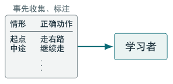
监督学习：数据附有正确答案。表格事先收集好，每种情形都标着正确动作，例如起点应走右路；学习者做什么都不改变这张表。
强化学习：数据来自交互。上方箭头是企鹅选的一条路，下方箭头是冰面回给它的鱼数。下一条数据取决于它这次选了哪条路，冰面也不说哪条路才对。
从交互中学习有三个难处：反馈只评价所选动作，奖励延迟到达，观测不完全。三者来源不同，下面逐一说明。
第一，反馈只评价所选动作。企鹅走左路，得到 1 条鱼；环境只对执行过的动作给出评分，不指明两条路里哪条最好。右路有多少鱼，只有亲自走一趟才知道，而每走一趟都要花掉一次机会。这一条来自没有正确答案，它引出探索与利用 的权衡：有限的尝试怎样在已知较好的动作和尚未试过的动作之间分配。第 1.2 节说明这种反馈的形式，第 2 章专门研究这个权衡。
第二，奖励延迟到达。右路第 1 步的奖励为 0，第 2 步为 4。只比较第一步，左路更优；把两步合起来比较，右路更优。评价第一步的选择，要把它以后带来的奖励也算进去，这叫信用分配 。这一条来自动作影响以后的状态，第 1.3 节用回报处理。
第三，观测不完全。这一条要换一个任务才看得到：屏幕先亮红灯或蓝灯，灯灭之后才让选择，红灯后该选左，蓝灯后该选右。选择时两种情形的观测相同，只凭当前观测无法区分，必须保留此前亮的是哪种灯。这一条来自传感器和环境本身，与有没有正确答案无关；第 1.2 节的提示任务和第 1.4 节讨论决策应依据哪些信息，即状态 。
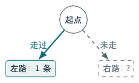
① 反馈只评价所选动作。实线是走过的左路，得 1 条；虚线是没走过的右路，结果只能标问号。
② 奖励延迟到达。右路第一步 0 条，第二步 4 条；红色弯箭头表示这 4 条要记到第一步的选择上。
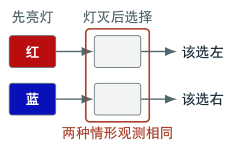
③ 观测不完全。左列是先亮的红灯或蓝灯，中间是灯灭后再选时的画面。两种情形的画面相同（红框），该选的却一左一右。
这三个难处在两步的小任务里就能看到，是强化学习特有的难处。Sutton 与 Barto 把试错搜索与延迟奖励称为强化学习最重要的两个区别特征，并指出探索与利用的权衡是其他学习类型里没有的挑战（§1.1）；观测与状态的问题在该书 §17.3 讨论。走出小任务，还会多出另外四类难处。其一，状态太多，无法逐个记录，只能用有限参数近似。近似带来泛化误差和训练的不稳定，第 9 章起讨论。其二，系统学到的知识怎样由它自己检验，第 1.1 节末讨论。其三，奖励由谁来给、会不会给错或被利用，第 1.3 节讨论。其四，环境本身随时间变化，学到的东西会过时，这是第三部分的主题。章首只列前三个，因为它们在表格情形下已经出现。后面各章的方法都针对它们的某种组合。Sutton 与 Barto，§1.1、§17.3
本章的做法是先把智能体、环境、奖励与回报定义清楚，再区分预测、控制与规划，看三个难处各落在哪里。全章分六节。第 1.1 节说明心智要做什么、什么才算学习、怎样才算知道；第 1.2 节规定谁在选、看到什么、边界画在哪里；第 1.3 节规定怎样用奖励比较行为，并讨论奖励从哪来、一个数够不够；第 1.4 节说明同一个目标可以在哪些信息条件下提出。它再区分评价与改进、从经验学与用模型算，把两组区分合成四类问题，并定义行为策略与目标策略。第 1.5 节看四个真实系统怎样分配搜索与学习。第 1.6 节说明为什么要走到部署中的持续学习，分三点：从模拟走向经验，选能随算力增长的方法，从人类数据到经验的三个时代。“给定、求、条件”的正式写法放在本章末的问题设定 ，那时每个符号都已定义。这条研究路线的出处放在本章小结之后的补充阅读 。那里列出 Alberta Plan、OaK 的回路、主要的不同意见和在做这条路线的研究者。
本章各节排成一条链：每一节补上前一节留下的一处空白，又留下新的空白。下图沿箭头读，蓝框是一节的内容，框下红字是这一节之后仍留下的空白，下一节针对它；表格逐行给出同一条链。
本章路线。从 1.1 读起，读到 1.6；每框下的红字是这一节留下的空白，1.6 框下的红字指向第 2 章。最后的虚线框是选读的补充阅读：Alberta Plan、OaK、不同意见与研究机构，放在本章小结之后。
节
内容
补上的空白
留下的空白
1.1
智能、心智与学习
心智只通过信号与世界打交道；五项功能以条件预测为中心；经验改变以后的行为才算学习，能自己验证的才算知道
谁在选、能选什么、看得到什么，尚未规定
1.2
智能体与环境的边界
接口 A t → ( O t + 1 , R t + 1 ) A_t\to(O_{t+1},R_{t+1}) A t → ( O t + 1 , R t + 1 )
有了逐步的奖励，还没有比较行为的准则
1.3
奖励与回报
回报 G t G_t G t J ( π ) = E π [ G 0 ] J(\pi)=\mathbb E_\pi[G_0] J ( π ) = E π [ G 0 ]
当前观测是否足以预测后果、模型能否查询，尚未说明
1.4
问题与方法
可观测性、模型权限与资源预算是彼此独立的条件；预测求 v π v_\pi v π max π J ( π ) \max_\pi J(\pi) max π J ( π )
有限计算花在眼前的搜索还是以后的学习
1.5
四个案例
用四个真实系统比较计算花在搜索还是学习、反馈改进了什么
这些系统大都在部署前学完，部署后不再改变权重
1.6
研究愿景
从模拟到经验的五级台阶；能随算力增长的方法；从人类数据到经验的三个时代
状态、长期后果与探索同时出现；第 2 章先只留探索与估值
1.1 智能、心智与学习课件
心智、智能与学习课件
本节讲三个词：心智、智能与学习。三个词都对着心智来说。心智 是系统的一部分，即处理信息的部分：它收到信号，发出动作。企鹅的心智是它的神经系统：它看到冰面与鱼，决定往哪里游。智能 是心智的能力：心智把目标实现得多好，有高有低。鱼换了地方，企鹅换一条路去找，说明它的心智在追求找到鱼这个目标。学习 是心智的改变：经验改变了同一处境下的选择。企鹅记下哪条路鱼多，下次在同一个起点改走那条路，这是学习。所以，心智是系统的一个部分；智能说的是这个部分实现目标的能力有多高；学习说的是这个部分怎样随经验改变。心智变了，智能也随之变高或变低。
不算在内的有两样：身体条件与运气。一只企鹅游得快，一天多找到几条鱼，不说明它的智能高；鱼恰好游到附近，也不算智能。它按记下的经验选路而多找到的鱼，才算智能的贡献。程序也一样：代码与参数是心智，电机与轮子是身体。
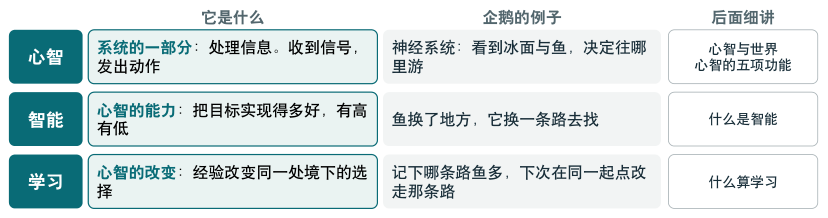
心智、智能与学习。三行分别是心智、智能与学习；各行依次给出它是什么、企鹅的例子与后面细讲的小节。心智是系统的一部分，智能是心智的能力，学习是心智的改变。
学习不一定让选择变好。冰面变了而记忆没有跟上，经验也可能把选择改坏；按下文“什么算学习”的定义，这也是学习。强化学习研究怎样让学习朝提高智能的方向进行：用奖励评价结果，用经验改进选择。
也可以用赛车来理解：发动机和轮胎是身体，不算驾驶水平；驾驶员是心智，他看仪表盘与路面，转方向盘、踩踏板；驾驶水平是智能，车的好坏与运气都不算在内；跑完一圈记住哪个弯道滑，下一圈换一条线开得更快，是学习。
下面依次细讲：心智面对的世界，心智的五项功能，什么是智能，什么算学习。智能的定义沿用 McCarthy 与 Sutton。Sutton，The Definition of Intelligence，2016
心智与世界课件
本课所说的心智 ，指一个系统里接收信号、保存经验、做预测、决定动作的部分。企鹅的心智是它的神经系统；一个程序的心智是它的代码与参数。力气、羽毛、轮子不算心智，它们属于身体，身体放在哪一边第 1.2 节再讲。Sutton 在 2001 年的短文里用一个比喻说明心智的处境：心智面前只有一排灯和几个按钮。灯是它能收到的全部输入，按钮是它能发出的全部输出。冰面、鱼、别的企鹅，它都看不到，只能从按下各个按钮之后灯的变化推断出来；按这种看法，外部物理世界这一概念本身也是心智为解释灯的变化而构造的。世界还另外报告一个数，即奖励 。这个数由世界给出，心智只能收到它，不能自己改它；第 1.2 节讲奖励装置时再说明这条约定。强化学习在这个比喻上加一条：心智的目标是让这个数长期尽可能大。第 1.2 节把这幅图写成智能体与环境的交互：灯是观测，按钮是动作，那个数是奖励。
具身认知与生成主义一派不接受这幅图。他们认为心智不能脱离身体和环境来刻画，把它关进一个只有输入和输出的盒子，会漏掉身体本身承担的计算；Sutton 自己也称这是一幅漫画式的图。本课仍采用这个看法，因为它能被精确地写成一个算法问题。Sutton，Mind is About Information，2001 · Sutton 与 Barto，§3.1
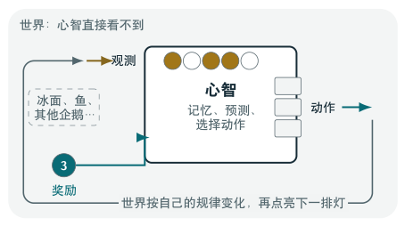
心智与世界。灰色的大区域是世界，心智在中间的白框里，框里写着它做的事：记忆、预测、选择动作。上排是灯，右侧是按钮；报告奖励的那盏灯画在世界一侧，因为这个数由世界给出。
心智的五项功能课件
心智是系统中处理信息的部分。它做的事包括：感知提供信息，记忆保留经验，预测描述行动的后果，动作选择把这些信息用于决策。这些过程共同决定一个系统能利用哪些知识、能实现哪些目标。下一小节问这些事做得多好，即智能；再下一小节问经验怎样改变这些事，即学习。
按本课的组织，心智的工作可以分成五项功能：
感知并构造状态（第 9、18、20 章）；
选择动作（第 2、6、11 章）；
从后果学习（第 4–7、17 章）；
用模型规划（第 8、22 章）；
调节自己的学习（第 23–25 章）。
每一项都要用到预测。价值是对以后奖励的预测；模型是对下一步观测的预测；对技能何时结束的判断也是预测。Sutton 在 2000 年的短文中把这类知识写成条件预测 ：从此刻起，若按某种方式行动，直到某件事发生，会看到什么。条件有三项：从哪里出发，按什么方式行动，到什么事件为止。例如预测现在去车站等车、车来时要等多久；车一来，就知道这个预测对不对。有些感受可以由智能体自己算出，例如最近总是感到意外。它可以看成对自身学习状况的读数，第 18 章给出定义。把预测放在中心是组织心智研究的一种方式，另有别的方式。行为主义传统更强调从刺激到反应的直接映射；无模型的策略学习也可以不显式预测而学会行动，第 11 章的策略梯度就是一例，不过它仍常用一个价值预测作为基线。五项功能的划分与章号对应是本课的提法。Sutton，Mind Is About Conditional Predictions，2000
心智的五项功能以预测为中心。环上五个框各是一项功能，框内第二行标出本课讲它的章；每个框都连到中间的“预测”，表示这项功能要用到预测。
什么是智能课件
人和许多其他动物表现出不同程度的智能。它们能够利用获得的信息，在不完全熟悉的环境中实现目标。这里的目标，是行为试图达到或维持的结果。身体条件当然会影响这些结果；这里要解释的，是感知、记忆、预测和判断怎样影响行为。McCarthy 提出、Sutton 进一步讨论的定义，把研究重点放在这个方面：智能是在世界中实现目标的能力中的计算部分 。实现目标还要靠身体条件与运气，这两样不算；计算的部分就是心智的贡献，所以智能可以看成心智实现目标的能力。同一只企鹅，游得快而多找到的鱼不算智能，记得哪片冰面鱼多而多找到的鱼算智能。按这一定义，智能是一种可以有不同程度的能力；比较两个系统时，问的是它们实现目标的程度，不必先把系统划为有智能或无智能。
这个定义里难解释的是有目标这一条。Sutton 借用 Dennett 的意向立场作答：若用一个系统所追求的结果来理解和预测它，比用它的机制来理解更有用，就说它有目标。恒温器在边界上：房主把它看成想把室温保持在二十度的装置，修理工把它看成一组触点和一块双金属片。William James 比较过水里的气泡和青蛙。两者都被倒扣的玻璃罐挡住：气泡一直往上，被罐顶住就停下；青蛙会换着方向游，直到绕出罐口。终点不变而手段在变，James 把这看作心智的标志，Sutton 把它与试错联系起来。从气泡到恒温器再到青蛙，手段越能随情形改变，越像在追求目标；智能因而是程度问题。这一定义也受到质疑。它只说实现目标，不说目标从哪来，第 1.3 节专门讨论奖励由谁来定。另一类定义把在许多不同环境中实现目标的能力作为智能的度量，更强调泛化的广度，例如 Legg 与 Hutter 的普适智能定义（Universal Intelligence: A Definition of Machine Intelligence，2007 ）。还有人认为，意向立场让有目标的判定过于依赖观察者，不够客观。本课取 McCarthy 与 Sutton 的说法，因为它直接导向一个可以计算的问题：在给定的世界里，把目标实现得更好。Sutton，The Definition of Intelligence，2016 · Sutton，Mind is About Information，2001
手段随情形改变的程度（示意）。从左往右读：气泡被罐顶挡住就停；恒温器低于 20° 就加热，只有一种手段；青蛙换着方向游，绕出罐口。越往右，用它追求的结果来理解它越有用。
什么算学习课件
学习是经验改变心智的过程。先给它一个可以检验的说法。两只企鹅站在同一个起点，面前是章首那两条路：左路一步得 1 条鱼，右路第一步没有、第二步得 4 条。甲只走过左路，记下的是左路 1 条、右路没走过，于是继续走左路。乙走过一次右路，记下的是左路 1 条、右路先 0 条再 4 条，于是改走右路。处境相同而选择不同，差别只能来自经验。这是从外部最容易检验的一种学习：经验改变了以后的行为。估计也可能变了而选择不变，例如甲多走几趟左路，把左路的估计调准，仍然走左路；这种变化属于下面的第二层。这里乙比较的是鱼的条数，尚未考虑第二步的鱼要不要打折，第 1.3 节再定义回报。
处境相同、经验不同的两只企鹅。每幅图中，实线箭头是它下一次的选择，方框是它记下的经验。甲没走过右路，继续走左路；乙记下右路先 0 条再 4 条，改走右路。
为了以后各章说得精确，一次学习分三层看，可以把企鹅乙和一个神经网络并排对照。第一层，行为变了没有：乙在起点改走右路；网络对同一输入给出不同的动作。第二层，变的是什么：乙变的是记忆；网络里可以是一组权重 ，也可以只是这一次上下文 里的一条记录。权重指网络训练时调整的那些参数；上下文指这一次输入里带进来的内容，例如对话里前面的几句话；下文“记住与学会”专门区分这两种。第三层，能否推广：学到的东西能不能用到别处。本课区分两个词：在同一个任务里用到没去过的状态、没见过的输入，叫泛化 ，例如新的冰洞；换一个任务仍然有用，例如换一片冰面，叫迁移 。如果只在去过的那一格有用，世界一大就学不完。
形式写法。用第 1.2 节的交互记号，智能体按 π ( ⋅ ∣ H t ) \pi(\cdot\mid H_t) π ( ⋅ ∣ H t ) h h h h ′ h' h ′ π ( ⋅ ∣ h ) ≠ π ( ⋅ ∣ h ′ ) \pi(\cdot\mid h)\neq\pi(\cdot\mid h') π ( ⋅ ∣ h ) = π ( ⋅ ∣ h ′ ) θ t \theta_t θ t π ( ⋅ ∣ o ; θ t ) \pi(\cdot\mid o;\theta_t) π ( ⋅ ∣ o ; θ t )
以行为为准的定义也有异议。心理学里，行为主义把学习定义为行为倾向的持久变化；认知传统更重视内部表征的变化，即使它暂时没有表现在行为上，例如潜伏学习。本课取以行为为准的说法，因为它能从外部检验；内部的变化放在第二层讨论。温颖，强化学习问题与大世界中的持续学习 · Sutton 与 Barto，§1.1
选读：经验的泛化
第三层的泛化可以用一片冰面说明。冰面上有 10×10 个冰洞，一条冰缝斜穿过去。企鹅试过其中 30 个，发现靠近冰缝的洞鱼多，远离冰缝的洞鱼少。若按洞记录 （表格），每洞一格，剩下 70 个没试过的洞停在初值，别的洞的经验改不动它们，只能逐个去试；世界一大，就永远试不完。若按特征记录 （函数逼近），记下的是靠近冰缝的洞鱼多这一规律，那么没试过但靠近冰缝的洞也得到较高的估计。经验通过共同的特征推广到了没去过的洞，这就是泛化。代价是特征选得不对，经验会推广到不该去的地方。第一部分的表格方法按格子记，第二部分起改用参数共享，第 9 章研究怎样用少量参数给出所有状态的估计。这片冰面是本课虚构的示意例，洞的分布与鱼的多少都是虚构的。
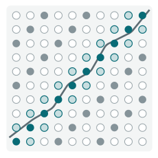
10×10 冰洞（示意）。斜线是冰缝；实心点是试过的 30 个洞，青色鱼多、灰色鱼少；空心点是没试过的洞。浅青的空心点没试过但靠近冰缝，按靠近冰缝鱼多这个特征也得到较高的估计。
记住与学会课件
一个写代码的语言模型智能体连做两项任务。任务一里，测试报错提醒它：某个函数要先检查空输入。它把这条提醒留在上下文里，修好了代码。若只改了上下文，任务一结束、上下文清空之后，权重没有变，任务二遇到同样的情形，它会再犯一次同样的错。若这次经验也改了权重，任务二一开始它就会先查空输入。两种改变都有用。上下文改得快、能撤销，只在这次任务里起作用；权重改得慢，会带到以后的任务，也会影响没见过的情形，代价是可能覆盖原有的知识（第 23 章）。能不能带到下一项任务，取决于任务之间清空什么。若一份笔记文件在任务之间保留下来，上下文之外也能带走经验；这时要按第 1.2 节的边界判据，判断笔记属于智能体还是环境。Sutton 在 2025 年的研究计划中指出，大语言模型部署后不再更新权重。按第二层的标准，它们在部署中只是在记住。第 13 章讨论上下文学习，第 15 章讨论部署中的持续学习。
记住与学会。上下两行是同一个编程智能体的两种改法：上行只改上下文，下行也改权重；红色虚线是任务一结束、上下文清空的时刻。到了任务二，上行同样的错再犯一次，下行的权重已经变了，一开始就先查空输入。
研究上下文学习的人有不同看法：模型在上下文里根据例子调整输出，本身就是一种学习，只是结果存放在激活里，权重没有变。当上下文很长、智能体还能把笔记写进长期保存的文件时，两者的界线会变得模糊。本课的判据是改变能否带到以后的任务；外部笔记算不算智能体的一部分，第 1.2 节用控制判据回答。这个编程例子是示意。Sutton，CCAI 研究计划，2025
时间均匀原则课件
今天最常见的做法是先训练、后部署：在一段训练期里更新权重，然后冻结。只要环境不变，这样做没有问题。环境一旦改变，冻结的系统无法自己调整，表现下降，只能等人收集新数据、重新训练。另一种做法是每一步都学：每一步都感知、行动、学习和规划，环境变了，表现先降一下，再逐渐跟上。Alberta Plan 把后者立为研究原则，称为时间均匀原则 ：对智能体运行的算法来说，所有时刻都一样。没有专门的训练期，奖励每一步都给，学习与规划每一步都做；环境看上去稳定时可以学得慢些，开始变化时再学得快些。这条原则把研究兴趣引向不平稳、不分回合的环境，以及持续学习和元学习，这是本课第三部分的主题。
两种学习时间（示意）。横轴是时间，纵轴是表现；红色虚线处环境改变。上行先训练、后部署，权重冻结，环境一变，表现下降并停在低处；下行每一步都学，表现先降一下，再逐渐回升。曲线只表示走势。
冻结也有实在的好处。系统可以在上线前被完整测试和认证，行为不会在使用中漂移，这对安全很重要。持续更新的系统还会遇到遗忘旧知识、逐渐失去可塑性等问题，第 23 章专门讨论。Alberta Plan 的作者也说明，时间均匀一部分是研究上的自我约束，必要时可以偏离，但偏离时要清楚自己在做什么。Sutton、Bowling 与 Pilarski，The Alberta Plan for AI Research，2022
选读：环境变化与发现
构建人工心智的研究愿景是：系统在设计者未逐一预见的条件下，仍能靠自己的经验形成知识与技能。设想一只动物熟悉了通往食物的直路；某天直路被挡住，食物仍在原处。它带着旧模型出发，预测直走可达，按预测行动；走到挡住的那一格，预测落空。它据此修正模型，记下此路不通，给出新的预测绕行可达，再按新预测行动，新预测又会被下一次行动检验。试以前没走过的路，就是探索 。预测—行动—检验—修正这个回路就是从经验形成知识的过程：已有知识决定行动，行动带来的经验检验预测，预测落空时修正知识，再按新的预测行动。
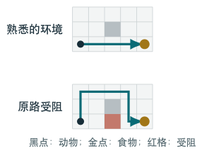
原路受阻。黑点是动物，金点是食物。上行是熟悉的环境，动物沿直路走到食物；下行红格挡住直路，食物仍在原处，动物只能绕行，或去试以前没走过的路。
左图下方只给出一种可行的绕行路线。例子不规定智能体事先知道道路已受阻，也不保证第一次绕行就能找到食物；已学的模型、行动技能和在线探索都可能帮助绕行。它只说明研究愿景的一小部分，不用来推断动物的内部机制。第 2 至 14 章分别处理探索、长期后果、模型、表示和大规模训练；第 15 章回到这个愿景，研究智能体怎样在不重置的经验流中形成并修订自己的状态、预测与技能。
另一种看法认为，经验改变以后的行动，不一定要求智能体在使用中持续改写自己的知识。在大规模数据上预训练的模型，部署后权重不变，仍能在一次交互的上下文里按新经验调整行为；按这种看法，形成知识主要发生在训练阶段，使用时有上下文中的适应就够了。它的局限是上下文长度有限，适应不能跨会话累积，也难以积累成新的技能。第 13 章讨论这条路线的做法，第 15 章讨论在不重置的经验流中持续学习的理由。Sutton，Proposed Research Program，2020 · 温颖，构建人工心智的研究愿景
生物的能力既依赖演化形成的基础，也依赖个体学习。人工系统同样可以从一个初始设计出发，在经验中形成设计者没有逐项写出的知识和技能。本课希望构造的人工心智，能够发现有用信息、预测行动后果、改善行为，并在遇到新问题时继续形成表示、探索方法与技能。强化学习提供了研究这条道路的计算框架：把学习放在一个需要行动、承担后果并实现目标的完整系统中。
全课沿这条道路分三部分展开。第一部分（第 2–8 章）在表格情形中建立基本构件：
第 2 章在奖励反馈下权衡探索与利用；
第 3 章用马尔可夫决策过程描述行动的长期后果；
第 4 章由已知模型计算价值；
第 5–7 章由经验做预测与控制；
第 8 章把学习与规划放进同一个智能体。
第二部分（第 9–14 章）不再逐状态存表。第 9–12 章用函数逼近、深度网络、策略梯度和大规模训练，处理状态多到无法逐一存储的问题。第 13、14 章把这些方法用于语言与具身环境，那里的动作、反馈和重置都有真实的代价。第三部分（第 15–26 章）回到本节的问题：一个容量有限的智能体在不按任务重置的经验流中，怎样形成自己的状态、预测性知识和技能，并持续改进行为。本课把这条路线称为用持续强化学习构建人工心智。前面各章的价值、模型、策略和表示，都会在第三部分作为它的组成部分重新出现。第 2–26 章怎样一环接一环，见本章末的全课地图 。
怎样才算知道？Sutton 在 2001 年提出一条验证原则 ，大意是：一个 AI 系统能创造和维持多少知识，以它能自己验证的为限。他用两个下棋程序作对比。1997 年的国际象棋程序深蓝靠大规模搜索比较各候选走法，这一步好坏的判断由搜索树检验；可是搜索走不到终局，叶子上的局面要靠人调好的评分函数来估，深蓝自己不检验这个函数，评分错了，系统不会知道。1992 年起的西洋双陆棋程序 TD-Gammon 在自对弈中，把此刻的胜率估计与下一步的估计、最后的胜负相比较，用差距修改评分，评分本身也在被检验和改进。第 5 章的时序差分学习是这个想法的算法形式。能自己检验是改进的前提，不是保证：错了才可能被系统发现，发现以后怎样改，还要靠学习规则。由此有一条推论：预测有到期的时刻，到期即可核对，所以本课把预测作为知识的基本形式：预测车来时要等多久，车来了就知道对不对。第 13 章的验证器、第 22 章把调用技能当作检验的做法、第 25 章的检验信号，都从这里出发。
深蓝的知识链。从左往右读：人调好的局面评分，交给搜索比较各候选走法，再选出走法。搜索这一段由搜索树检验，评分错了系统自己不知道。
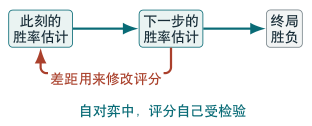
TD-Gammon 的知识链。此刻的胜率估计与下一步的胜率估计、终局胜负相比，差距用来修改评分；靠自对弈，评分由系统自己检验。
有用的知识不都能由系统自己验证：数学证明依靠形式系统，大量常识来自他人的转述。今天的大语言模型从人类文本中获得大量知识，很少自己验证，仍然有用。支持验证原则的一方回答，这样的知识难以在规模变大、环境变化时由系统自己维护，出了错要靠人来改。两方的分歧在第 13 章具体化为奖励来自验证器还是来自人的偏好。Sutton，Verification, The Key to AI，2001-11-15 · Tesauro，TD-Gammon（1992–1995）
强化学习追求一种能普遍用于交互学习的方法。行动后的观测和奖励就能提供学习的依据。若有人示范一条好路线，智能体可以据此决定先试什么。若有可靠的环境模型，还可以在实际行动前推演后果。示范提供动作，模型提供预测，衡量策略好坏的仍是任务规定的长期奖励准则。Sutton 与 Barto，第一版 §10.2
1.2 智能体与环境的边界课件
智能体与环境课件
企鹅每步只看到一个奖励：左路 1 条鱼，右路先 0 后 4 条。第 1.1 节只说了要学，经验要改变以后的选择；谁在选、能选什么、看到什么，还没有规定，这一节来定。选择动作的部分称为智能体 ，同它交互的其余部分构成环境 ；边界取决于智能体能直接选择什么。在时刻 t t t A t A_t A t 观测 O t + 1 O_{t+1} O t + 1 奖励 R t + 1 R_{t+1} R t + 1 t + 1 t+1 t + 1 A t A_t A t 策略 π \pi π P P P P P P
令 O t O_t O t t t t A t A_t A t R t + 1 R_{t+1} R t + 1 O t + 1 O_{t+1} O t + 1
O t ⟶ A t ⟶ ( R t + 1 , O t + 1 ) .
O_t\ \longrightarrow\ A_t\ \longrightarrow\ (R_{t+1},O_{t+1}).
O t ⟶ A t ⟶ ( R t + 1 , O t + 1 ) .
奖励与新观测使用同一个下标，强调它们是在动作之后共同到达的反馈。观测提供信息，奖励规定评价行为所需的数值；两者可以来自相同的传感系统，却承担不同作用。
智能体与环境的一次交互。上方青色箭头是策略选出的动作 A t A_t A t O t + 1 O_{t+1} O t + 1 R t + 1 R_{t+1} R t + 1
智能体与环境的边界取决于所研究的决策。 图中给定当前的交互历史，智能体可以选 a a a b b b a a a 3 / 4 3/4 3/4 o 1 o_1 o 1 1 / 4 1/4 1/4 o 2 o_2 o 2 a a a
一次决策的动作与反馈。上方箭头跨过动作接口，条带的宽度表示选定 a 后两种可能后果的概率。下方箭头把这一次实际发生的观测和奖励送回智能体。
交互的记号课件
把上面的回路沿时间展开。历史 H t H_t H t t t t
H t = ( O 0 , A 0 , R 1 , O 1 , … , A t − 1 , R t , O t ) .
H_t=(O_0,A_0,R_1,O_1,\ldots,A_{t-1},R_t,O_t).
H t = ( O 0 , A 0 , R 1 , O 1 , … , A t − 1 , R t , O t ) .
用冰面任务的右路对照每个符号。企鹅先看到自己站在起点，这是观测 O 0 O_0 O 0 A 0 A_0 A 0 R 1 R_1 R 1 O 1 O_1 O 1 A 0 A_0 A 0 R 1 R_1 R 1 O 1 O_1 O 1
右路一趟的时间线。从左往右：O 0 O_0 O 0 A 0 A_0 A 0 R 1 , O 1 R_1,O_1 R 1 , O 1 A 1 A_1 A 1 R 2 , O 2 R_2,O_2 R 2 , O 2 H 1 = ( O 0 , A 0 , R 1 , O 1 ) H_1=(O_0,A_0,R_1,O_1) H 1 = ( O 0 , A 0 , R 1 , O 1 ) A 1 A_1 A 1
交互的一般形式由两个条件分布交替给出：
A t ∼ π ( ⋅ ∣ H t ) , ( O t + 1 , R t + 1 ) ∼ P ( ⋅ ∣ H t , A t ) .
A_t\sim\pi(\cdot\mid H_t),\qquad (O_{t+1},R_{t+1})\sim P(\cdot\mid H_t,A_t).
A t ∼ π ( ⋅ ∣ H t ) , ( O t + 1 , R t + 1 ) ∼ P ( ⋅ ∣ H t , A t ) .
策略 π \pi π P P P P P P
记号的读法：“∼ \sim ∼ 读作“按右边给出的概率抽出”；竖线“∣ \mid ∣ 读作“在右边这些已经发生的条件下”；圆点“⋅ \cdot ⋅ 占着一个位置，表示各个可能的取值。π ( ⋅ ∣ H t ) \pi(\cdot\mid H_t) π ( ⋅ ∣ H t ) H t H_t H t 条件分布 。Sutton 与 Barto，§3.1
评价性反馈课件
奖励只给选中的动作打分，不指出哪个动作正确。评价性反馈 只告诉学习者这次做得多好，不告诉它该怎么做。学生做一道选择题，答了 B，老师批改时不仅说错，还写出正确答案是 C；无论答了什么，学生都能知道应该答什么。这种反馈叫指导性反馈，从带标准答案的例题中学习叫监督学习 。企鹅在起点选了左路，冰面给它 1 条鱼。这 1 条鱼只是对左路的评分：1 条算多还是算少，右路会得到多少，这一次交互都不回答。
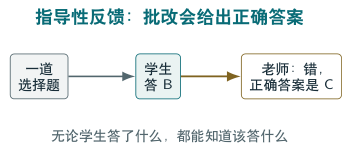
指导性反馈。学生无论答什么，老师都给出正确答案：“错，正确答案是 C”。
评价性反馈。企鹅选左路，冰面只回答“得 1 条”；虚线框里的“右路会得多少？”没有回答，1 条算多还是算少，这一次交互也不回答。
两图对照有两处差别。第一处是只评所选动作 ：一直走左路的企鹅每次都得 1 条鱼，永远不会知道右路第 2 步有 4 条鱼。它得自己去试还不清楚好坏的路，这称为探索 。探索要花掉本可以用来拿鱼的机会，怎样分配是第 2 章的题目。第二处是数据依赖动作 ：走了右路，才看得到中途和终点。监督学习的例题事先备好，不随学生的回答改变；强化学习的数据由智能体自己的选择产生。学习者因而还要决定怎样获得有用的新样本。监督回归即使能拟合已有样本，也不回答这件事。Sutton 与 Barto，§§1.1、2.1
在同一套记号下并排写出两种问题，强化学习与监督学习差两处：奖励只评所选动作，下一份数据依赖动作。监督学习的数据是独立同分布的输入–标签对 ( X i , Y i ) ∼ d (X_i,Y_i)\sim d ( X i , Y i ) ∼ d f ( X i ) f(X_i) f ( X i ) ℓ ( y , Y i ) \ell(y,Y_i) ℓ ( y , Y i ) y y y X i + 1 X_{i+1} X i + 1 d d d min f E d [ ℓ ( f ( X ) , Y ) ] \min_f\mathbb E_d[\ell(f(X),Y)] min f E d [ ℓ ( f ( X ) , Y )] A t ∼ π ( ⋅ ∣ H t ) A_t\sim\pi(\cdot\mid H_t) A t ∼ π ( ⋅ ∣ H t ) ( O t + 1 , R t + 1 ) ∼ P ( ⋅ ∣ H t , A t ) (O_{t+1},R_{t+1})\sim P(\cdot\mid H_t,A_t) ( O t + 1 , R t + 1 ) ∼ P ( ⋅ ∣ H t , A t ) R t + 1 R_{t+1} R t + 1 A t A_t A t O t + 1 O_{t+1} O t + 1 A t A_t A t
两处差别互相独立，各取有无，得到四类问题。课件上每格配一个例子。监督学习以分类为例；交互式模仿学习画专家轨迹与学习者自己走出的轨迹；上下文赌博机画一台老虎机；强化学习画智能体与环境的回路。
下一份数据与输出无关
下一份数据依赖动作
每个输出都能评分（指导性）
监督学习
交互式模仿学习
只评所选输出（评价性）
上下文赌博机（2.7 节）
强化学习
只有第一处差别的是上下文赌博机：每轮的上下文独立抽出，不受动作影响，但只看到所选动作的奖励。只有第二处差别的是交互式模仿学习，例如 DAgger。专家对学习者实际到达的每个情形都给出正确动作，反馈是指导性的；到达哪些情形却取决于学习者自己的行为。两处差别都有的是强化学习问题。反过来，若每个情形都能查到全部动作的奖励，评价性反馈就退化为指导性反馈，取奖励最大的动作当标签即可。第 2 章的赌博机只保留第一处差别，探索问题在那里单独出现；第 3 章起两处都在。也有人认为这样的二分过于干净。实际系统里，人类偏好打分、专家修正和环境奖励可以混在同一条数据流中，一条反馈不一定只归入一格。Sutton 与 Barto，§§1.1、2.1、2.9 · Ross、Gordon 与 Bagnell，A Reduction of Imitation Learning and Structured Prediction to No-Regret Online Learning，AISTATS 2011
机械臂的动作层次课件
同一只机械臂，学习器直接选的量不同，动作就不同。目标是让夹爪尽快进入橙色圆区。人的指尖和机械臂的夹爪都可以接近这个圆区；以机械臂为例，每隔同样长的时间选一次动作，每个控制步得 − 1 -1 − 1 T T T − T -T − T
人的指尖与机械夹爪都伸向橙色圆区。
同一只手臂上做两项实验。先说清两个词：参考位置 是希望夹爪下一步到达的位置，是发给运动控制器的指令；力矩 是电机施加在关节上、使它转动的作用，力矩越大，关节转速改变得越快。
实验甲：学习器看相机给出的夹爪位置，指定下一控制步的参考位置 g t g_t g t u t u_t u t g t g_t g t
实验乙：学习器担任运动控制器。上层给出 g t g_t g t u t u_t u t
智能体的边界课件
边界划在学习器直接选择的那条指令上。两项实验使用同一条控制链：上层策略给出参考位置，运动控制器把它变成关节力矩指令，电机和机械臂执行。甲的学习器是上层策略，运动控制器在它的环境里。乙的学习器放在原来运动控制器的位置。这时上层策略是固定的参考位置生成器，属于环境；电机、手臂和产生观测与奖励的部分也属于环境。同一个参考位置在甲中是动作，在乙中是学习器收到的输入。能选择力矩指令，不等于能任意指定实际位置。给定指令后，夹爪实际到达哪里，由控制链与手臂本身的物理规律决定。
机械臂实验的两种边界。每行从左到右是同一条执行链：上层策略、运动控制器、电机与机械臂；金色回线是送回学习器的反馈，虚线框圈出学习器。甲行的学习器是上层策略，动作是参考位置，运动控制器落在环境一侧；乙行的学习器取代运动控制器，动作是关节力矩指令，反馈多了关节读数。硬件相同，边界随学习器直接选择的量移动。
两项实验都在相机测到夹爪首次进入圆区时结束，计时与奖励相同。参考位置在前一项是学习器作出的选择，在后一项是学习器收到的信息。判断边界时，可以沿图上的控制链找到哪一条指令由所研究的智能体直接选择。Sutton 与 Barto，§3.1，例 3.2 与练习 3.3 · Silver，交互回路，第 16–17 页 · Machado，选择、观测与奖励，第 8 页 · Tedrake，驱动力矩与摆的运动
奖励装置在环境里课件
问题定义把计分装置放在智能体改不到的地方。这是定义上的约定，不是物理事实；边界表示智能体控制所及，不表示它知道多少。上面的判据看哪一条指令由智能体直接选择；第二条判据是：凡是智能体不能任意改动的东西，都算环境 。Sutton 与 Barto 指出，奖励即使在机器人或动物的身体里计算，也被看作在智能体外部，因为智能体不能随意改变它。为什么要这样规定，可以看一个按钮例子。假如企鹅能伸手拨动计分器，按一下按钮，以后每一步都记 10 分，再也不用走路。按第 1.3 节定义的折扣回报，取 γ = . 9 \gamma=.9 γ = .9
10 + 9 + 8.1 + ⋯ = 10 1 − . 9 = 100 ,
10+9+8.1+\cdots=\frac{10}{1-.9}=100,
10 + 9 + 8.1 + ⋯ = 1 − .9 10 = 100 ,
走右路吃鱼只有 . 9 × 4 = 3.6 .9\times4=3.6 .9 × 4 = 3.6
计分器在环境一侧。企鹅的动作作用于冰面与鱼，环境方框里的计分器数鱼、给出奖励；红色虚线箭头“直接改写？”是被规定排除的路：智能体只能通过行动影响奖励，不能直接改写计分器。
对这一规定也有异议。在生物体里，奖励信号由大脑自己产生，有人因此主张把奖励看作智能体内部的东西，内在动机的研究就常这样处理。教材的回答是：把产生奖励的那部分大脑划到环境一侧，正因为智能体不能任意改动它。另一个问题是，真实系统里这条边界可能不牢。安全研究把智能体篡改奖励来源的行为叫做奖励篡改（wireheading）。按钮例为本课构造。Sutton 与 Barto，§3.1
选读：记忆的归属
在本例的边界下，同样一份记录，智能体能随意改写，就是它的记忆；只能读、不能改，就是一种观测。控制判据决定一份记录归谁。设想两份内容完全相同的记录，都写着右路 4 条。一份写在智能体自己的笔记本里，它可以随意改写。这本笔记属于智能体，是它的智能体状态的一部分；写错了，它可以自己纠正。另一份在由环境维护的日志里，智能体只能读、不能改。这份日志属于环境，读到的内容是观测；日志写错了，智能体只能把它当作一种可能出错的观测，另作判断。记录的内容一样，归属不同，学习问题也不同。这一区分也适用于语言模型智能体。它写进记忆文件的内容，若下次可以随意改写，就是它的状态；若由别的程序记录、只能读取，就是观测。智能体可以写入、但写入要经环境程序处理的外部记录，也算环境。第 13 章讨论上下文由谁写，第 14 章讨论具身智能体的接口，都会用到这条判据。这个例子是本课据 Sutton 与 Barto §3.1 的控制判据构造的。
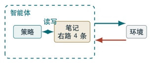
记录在智能体一侧。虚线框是智能体；写着“右路 4 条”的笔记在框内，策略可以读写它，它属于智能体。
记录在环境一侧。内容同样是“右路 4 条”，这份记录放在框外的环境里，策略只能读、不能改，按控制判据它属于环境。
记忆放在哪一边，在基于图像的控制中也会遇到。动作、奖励和游戏动力学都可以固定。一帧画面给出球的位置，连续几帧还提示它的运动方向。若模拟器直接报告速度，移除这个信号就改变了决策者可用的信息。若只把过去几帧的缓存从模拟器搬到智能体内部，且读数、时序与资源相同，策略获得的信息不变。是否允许从同一起点重新尝试又是独立条件。撤去重置后，返回起点的动作和时间也成为经验的一部分。温颖，三元间接交互与二元直接交互
算例：提示任务课件
边界定下了动作，策略还要有选动作所需的信息。当前观测未必包含行动所需的全部信息。只看当前画面的策略，在下面的提示任务中成功率恒为 1 / 2 1/2 1/2 提示 ，即只亮一次的颜色信号，两者等概率。第 1 步提示消失，当前画面完全相同；红色提示后应选左，蓝色提示后应选右。正确得 1，错误得 0。只看当前画面的策略，若选左概率为 p p p
1 2 p + 1 2 ( 1 − p ) = 1 2 .
\tfrac12p+\tfrac12(1-p)=\tfrac12.
2 1 p + 2 1 ( 1 − p ) = 2 1 .
对任何 p p p H 1 = ( O 0 , A 0 , R 1 , O 1 ) H_1=(O_0,A_0,R_1,O_1) H 1 = ( O 0 , A 0 , R 1 , O 1 ) O 0 O_0 O 0 S t + 1 = u ( S t , A t , R t + 1 , O t + 1 ) S_{t+1}=u(S_t,A_t,R_{t+1},O_{t+1}) S t + 1 = u ( S t , A t , R t + 1 , O t + 1 ) S 1 S_1 S 1 S 1 S_1 S 1 S t S_t S t 1 / 2 1/2 1/2
给提示任务补上记忆。两行是两种提示：第 0 步亮红或蓝，第 1 步的画面相同（红框），正确动作一左一右。只看第 1 步画面的策略，两行只能共用同一个选左概率 p = π ( 左 ) p=\pi(\text{左}) p = π ( 左 ) S 1 S_1 S 1 H 1 = ( O 0 , A 0 , R 1 , O 1 ) H_1=(O_0,A_0,R_1,O_1) H 1 = ( O 0 , A 0 , R 1 , O 1 ) O 0 O_0 O 0
本课的模拟分别训练只看当前画面和额外读取提示的策略。两组都用所选动作的奖励学习动作价值，独立重复 20 次、每次 2000 回合，动作选择采用 0.1 概率的均匀探索。图为精确枚举两种提示得到的贪心成功率；评价不参与训练，阴影是各次运行之间的范围。
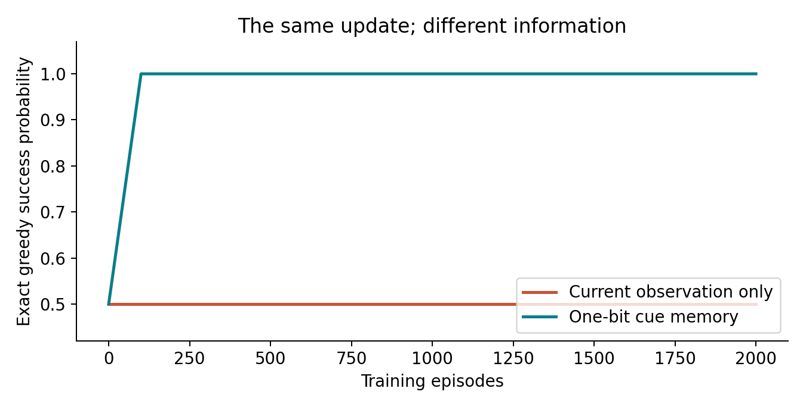
相同价值更新在不同信息条件下的学习结果。提示保存机制由实验给定，学习的是如何利用提示。
状态是造出来的课件
智能体一般看不全环境的状态，要用感知把观测、动作与奖励的历史压成自己的状态 S t S_t S t S t = O t S_t=O_t S t = O t S t S_t S t
S t + 1 = u ( S t , A t , R t + 1 , O t + 1 ) , A t ∼ π ( ⋅ ∣ S t ) .
S_{t+1}=u(S_t,A_t,R_{t+1},O_{t+1}),\qquad A_t\sim\pi(\cdot\mid S_t).
S t + 1 = u ( S t , A t , R t + 1 , O t + 1 ) , A t ∼ π ( ⋅ ∣ S t ) .
这里 u u u H t H_t H t u u u u ( S t , A t , O t + 1 ) u(S_t,A_t,O_{t+1}) u ( S t , A t , O t + 1 ) R t + 1 R_{t+1} R t + 1 S t S_t S t Z t Z_t Z t S t S_t S t S t = O t S_t=O_t S t = O t
Alberta Plan 的基础智能体由四个部分组成。感知 把上一时刻的状态、刚做的动作和新观测合成当前状态，即上式中的 u u u 策略 根据状态选动作；价值函数 预测以后的奖励，用来评价和改进策略；转移模型 预测动作的后果。感知、策略和价值函数每一步都要算完。规划 用模型和价值函数改进策略与价值本身；它在后台异步运行，可以跨多步才完成。Alberta Plan 的作者指出，四个部分里人们对感知了解得最少。已有一些设计好的感知，例如信念状态更新，或在 Atari 游戏里记住最近四帧。怎样学出最能支持其他部分的感知，至今没有一般的答案。第 18 章讨论什么样的状态才够用，第 20 章讨论怎样学出状态。
一种智能体结构。观测 O t O_t O t S t S_t S t A t A_t A t S t S_t S t
部分可观测马尔可夫决策过程（POMDP）给出另一种回答：若知道环境模型，可以算出对环境状态的后验分布，即信念状态，它在理论上是充分的。Alberta Plan 认为，环境的真实状态空间对智能体不可知，所以这一框架用处有限。POMDP 一方则认为，它给出了正确性的标准。第 18 章把两种看法并列。Sutton、Bowling 与 Pilarski，The Alberta Plan for AI Research，基础智能体一节与图 2
大世界假设课件
构造状态之所以难，还因为世界远大于智能体。大世界观点 强调，问题提出的表示与计算需求超过学习者的有限容量。在本课关注的持续交互中，学习者沿自身行动获得经验，不能尝试所有可能的未来，也不能保存全部过去。它必须选择记住什么、预测什么，以及把计算用于何处。即使环境规律不变，未遇到的情况和未掌握的规律也可能很多。所以长期学习也要处理环境未变时尚未学到的规律。
世界远大于智能体时，智能体必须选择学什么。大世界假设 可以这样表述：世界中发生的事，远多于智能体能看到、记住和处理的事。下图左右两幅里企鹅一样大。左边把企鹅放在一个它能看全的小环境里，这是做实验时的设想。右边仍是这只企鹅，周围的世界大得多。觅食时它可能要留意哪里可以入水，要返回原处还得记住来路；什么值得记，取决于接下来要做什么。即使世界的规律固定，行动也会改变以后遇到的情形。所以有限的智能体只能从不断到来的经验中挑选值得学的内容。
设想与实际。图中英文 Expectations 意为设想，Reality 意为实际。左右两只企鹅一样大，交互回路也相同，变的只是周围世界的复杂程度；图比较的是世界与智能体的复杂程度，与空间尺寸无关。
原图出自 Kris De Asis，Design for Learning ，经温颖，强化学习问题与大世界中的持续学习 引用。大世界说的是所研究的问题具有这种资源不对称；它刻画一类问题，MDP 的定义本身并不要求这种不对称。过参数化的一方认为，模型足够大时，一次训练也能覆盖很多变化，不必一直学下去。下文“大世界：原因与推论”的末尾再讨论这一点。Sutton 的 NSERC 研究计划（2022） 第 2 页给出这一假设的早期表述，在那里称为 Big World Problem；Javed 与 Sutton（2024）给出完整论述。
需要区分三种限制。信息不足使不同历史变成同一输入；函数表示不足使可用函数类不能拟合所需预测；计算不足使已知模型也无法得到穷尽搜索。有限经验还会造成估计误差，优化过程也未必已找到可用函数类中的最好解。这些困难影响的位置不同。
马尔可夫状态要求保留预测下一步所需的历史信息，第 3 章给出条件。第 9 章研究有限函数表示。第 8 章与第 12 章研究有限的规划计算。第 15 章进一步研究智能体状态怎样从经验形成，以及表示改变之后旧价值、模型和技能怎样继续学习。
大世界：原因与推论课件
智能体装不下世界，只能近似；最好的近似随处境而变，跟踪它需要持续学习。Javed 与 Sutton 的出发点是：在许多决策问题中，智能体比环境小几个数量级。它既不能感知世界的全部状态，也不能为每个状态各存一个价值或最优动作。智能体看不全世界：传感器有限，世界里还有别的智能体。有人会期待算力增长终会装下世界，他们给出两个理由说明追不上。第一，传感器也随算力变精细，相机分辨率更高、采样更快，要处理的数据随之增多；智能体变大，它看到的世界也变大。第二，世界里有别的智能体，它们和自己一样复杂。与 AlphaZero 对弈时，对它的对手而言，环境的规律里包含 AlphaZero 的整套策略；对手越强，世界越复杂。
由此有两个推论。第一，即使世界的规律固定，有限的智能体也只能近似，而最好的近似随它所处的情形而变。行动换了一处，最好的近似也随之换了。所以学习器要一直更新、跟踪变化，收敛以后也不冻结。所处情形不变、近似已经学好时，额外的更新未必有益，持续学习要能自己放慢。第二，在线做决定的时间有限，快而粗的近似解和够用的简化模型可以胜过慢而精的。他们的例子是用牛顿力学而不用量子力学。第 15 章讨论学习器在全程中的回报，第 17 章讨论流式学习，都从这两点展开。
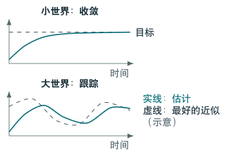
收敛与跟踪（示意）。上行是小世界：估计逐渐靠近虚线目标，停在那里。下行是大世界：虚线是当前能做到的最好近似，它随处境移动；实线估计跟着它走。曲线只表示走势。
与之对立的是过参数化观点：真实问题有简单的解，只要智能体容量足够，就能学到并停在那里。两位作者也说明，大世界假设主要声明应当关心哪一类问题，并非对所有问题都成立的事实。基准的设计可以人为让它成立或不成立。另一种意见认为，只要环境变化足够慢，冻结后定期重训也能工作。Javed 与 Sutton，The Big World Hypothesis and its Ramifications for Artificial Intelligence，2024
已解决的部分与条件 Sutton、Koop 与 Silver（2007）给出例子：环境规律固定，而函数逼近器容量不够时，一直跟踪的学习器比收敛后冻结的解得到更好的预测。条件有两条：一是容量不足以同时表示所有处境下的好解，二是相邻时刻的正确答案彼此相近，即原文所说的时间连贯。
已有做法与假设 一种做法是给步长一个下限，让学习器一直更新。这假设跟踪的好处总大于噪声更新的代价；处境不变、近似已经学好时，这个假设不成立。
未解决的部分 容量、环境变化速度与步长三者之间怎样决定跟踪是否有利，没有一般的刻画。学习器怎样从自己的经验判断该加快还是放慢学习，也没有通用的方法；第 17、23 章的步长自适应只处理了其中一部分。
怎样检验 取一个规律固定的预测任务，逐步减小学习器的容量（例如特征数）。对每个容量，比较学到收敛再冻结与步长保持下限一直学两种做法在同一条经验流上的累计预测误差。若大世界假设的推论成立，容量越小，一直学的优势越大；容量足够时，两者应当接近。
1.3 奖励与回报课件
当前奖励与后续回报
每走一步，环境给出一个数值信号，称为奖励 ；评价一次选择，还要计入之后陆续到达的奖励。考虑一个贯穿本章的确定性两步任务，可以把它想成冰面取鱼：每一步的奖励是这一步取到的鱼数。在起点 s s s L L L R R R u u u 折扣因子 γ ∈ [ 0 , 1 ] \gamma\in[0,1] γ ∈ [ 0 , 1 ] 回报 G 0 G_0 G 0 γ = . 9 \gamma=.9 γ = .9 0.9 0.9 0.9 . 9 .9 .9
G 0 ( L ) = 1 , G 0 ( R ) = 0 + . 9 × 4 = 3.6.
G_0(L)=1,\qquad G_0(R)=0+.9\times4=3.6.
G 0 ( L ) = 1 , G 0 ( R ) = 0 + .9 × 4 = 3.6.
比较即时奖励会选择 L L L R R R
冰面两步任务。企鹅站在起点；向左走一步得 1 条鱼并终止，向右第一步 0 条、第二步 4 条后终止。离开起点后只能沿所选路线前进。
晚到的奖励打折有两个理由。第一，越远的奖励越不确定，智能体未必等得到。第二，任务若永不结束，不打折时奖励之和可能没有上限。两种比较在 γ = 1 / 4 \gamma=1/4 γ = 1/4 4 γ < 1 4\gamma<1 4 γ < 1 γ < 1 / 4 \gamma<1/4 γ < 1/4
回报与目标课件
回报随轨迹而变，目标 J ( π ) J(\pi) J ( π ) 轨迹 ；从起点走到终点的一整段轨迹叫一个回合 ，走完重新开始。设一个回合在时刻 T T T γ ∈ [ 0 , 1 ] \gamma\in[0,1] γ ∈ [ 0 , 1 ] 定义 从时刻 t t t
G t ≐ R t + 1 + γ R t + 2 + ⋯ + γ T − t − 1 R T = ∑ k = 0 T − t − 1 γ k R t + k + 1 .
G_t\doteq R_{t+1}+\gamma R_{t+2}+\cdots+\gamma^{T-t-1}R_T=\sum_{k=0}^{T-t-1}\gamma^kR_{t+k+1}.
G t ≐ R t + 1 + γ R t + 2 + ⋯ + γ T − t − 1 R T = k = 0 ∑ T − t − 1 γ k R t + k + 1 .
下标从 t + 1 t+1 t + 1 A t A_t A t G t G_t G t T = ∞ T=\infty T = ∞ 0 ≤ γ < 1 0\le\gamma<1 0 ≤ γ < 1 ∣ R t ∣ ≤ R max |R_t|\le R_{\max} ∣ R t ∣ ≤ R m a x ∣ G t ∣ ≤ R max / ( 1 − γ ) |G_t|\le R_{\max}/(1-\gamma) ∣ G t ∣ ≤ R m a x / ( 1 − γ )
记号 ≐ \doteq ≐ k k k γ k \gamma^k γ k γ = 1 \gamma=1 γ = 1 γ < 1 \gamma<1 γ < 1 γ = . 9 \gamma=.9 γ = .9 10 / ( 1 − . 9 ) = 100 10/(1-.9)=100 10/ ( 1 − .9 ) = 100 γ = 1 \gamma=1 γ = 1
在固定的起点分布 下（每回合从哪个节点出发、各有多大概率；冰面任务总从起点出发），用策略产生的期望回报比较策略。目标
J ( π ) ≐ E π [ G 0 ] .
J(\pi)\doteq\mathbb E_\pi[G_0].
J ( π ) ≐ E π [ G 0 ] .
奖励与回报是两个量。按即时奖励比较会选左路（1 > 0 1>0 1 > 0 按 γ = . 9 \gamma=.9 γ = .9 （3.6 > 1 3.6>1 3.6 > 1 期望回报也不必是某一趟能取得的回报：在起点以概率 p = 1 / 4 p=1/4 p = 1/4 J ( π ) = . 75 ( 1 ) + . 25 ( 3.6 ) = 1.65 J(\pi)=.75(1)+.25(3.6)=1.65 J ( π ) = .75 ( 1 ) + .25 ( 3.6 ) = 1.65 1 1 1 3.6 3.6 3.6
一般地，若在起点以概率 p p p J ( p ) = ( 1 − p ) + 4 γ p J(p)=(1-p)+4\gamma p J ( p ) = ( 1 − p ) + 4 γ p J J J γ = 1 / 4 \gamma=1/4 γ = 1/4
若评价的是连续捕鱼六个环境步，还要说明每趟结束后怎样重新出发。设每次取鱼后立即返回起点，不另用一步。始终走左路得到 ( 1 , 1 , 1 , 1 , 1 , 1 ) (1,1,1,1,1,1) ( 1 , 1 , 1 , 1 , 1 , 1 ) ( 0 , 4 , 0 , 4 , 0 , 4 ) (0,4,0,4,0,4) ( 0 , 4 , 0 , 4 , 0 , 4 )
即使两种任务取同一个折扣，选择也可能相反。单趟按 1 1 1 4 γ 4\gamma 4 γ 1 + γ + γ 2 + ⋯ = 1 / ( 1 − γ ) 1+\gamma+\gamma^2+\cdots=1/(1-\gamma) 1 + γ + γ 2 + ⋯ = 1/ ( 1 − γ ) 4 γ + 4 γ 3 + ⋯ = 4 γ / ( 1 − γ 2 ) 4\gamma+4\gamma^3+\cdots=4\gamma/(1-\gamma^2) 4 γ + 4 γ 3 + ⋯ = 4 γ / ( 1 − γ 2 ) 1 + γ = 4 γ 1+\gamma=4\gamma 1 + γ = 4 γ γ = 1 / 3 \gamma=1/3 γ = 1/3 γ = . 30 \gamma=.30 γ = .30 1.2 > 1 1.2>1 1.2 > 1 1.429 1.429 1.429 1.319 1.319 1.319 用代码比较各个期限和折扣 。
回报的递推课件
回报可以从终点向前一步一步算出。由定义推出这一递推：
把求和的 k = 0 k=0 k = 0 G t = R t + 1 + ∑ k = 1 T − t − 1 γ k R t + k + 1 G_t=R_{t+1}+\sum_{k=1}^{T-t-1}\gamma^kR_{t+k+1} G t = R t + 1 + ∑ k = 1 T − t − 1 γ k R t + k + 1
其余各项提出一个 γ \gamma γ j = k − 1 j=k-1 j = k − 1 ∑ k = 1 T − t − 1 γ k R t + k + 1 = γ ∑ j = 0 T − t − 2 γ j R ( t + 1 ) + j + 1 \sum_{k=1}^{T-t-1}\gamma^kR_{t+k+1}=\gamma\sum_{j=0}^{T-t-2}\gamma^{j}R_{(t+1)+j+1} ∑ k = 1 T − t − 1 γ k R t + k + 1 = γ ∑ j = 0 T − t − 2 γ j R ( t + 1 ) + j + 1
右边的和按定义正是 G t + 1 G_{t+1} G t + 1 G T = 0 G_T=0 G T = 0
于是
G t = R t + 1 + γ G t + 1 .
G_t=R_{t+1}+\gamma G_{t+1}.
G t = R t + 1 + γ G t + 1 .
这一恒等式 对每条轨迹逐点成立，第 3 章对它取条件期望，得到 Bellman 方程；第 5 章的 TD 目标把其中的 G t + 1 G_{t+1} G t + 1 R 1 = 0 , R 2 = 4 R_1=0,R_2=4 R 1 = 0 , R 2 = 4 G 2 = 0 G_2=0 G 2 = 0 G 1 = 4 + . 9 × 0 = 4 G_1=4+.9\times0=4 G 1 = 4 + .9 × 0 = 4 G 0 = 0 + . 9 × 4 = 3.6 G_0=0+.9\times4=3.6 G 0 = 0 + .9 × 4 = 3.6
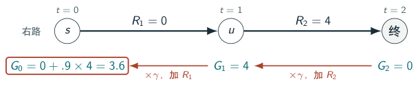
从终点往回算回报。状态沿 s → u → s\to u\to s → u → R 1 = 0 R_1=0 R 1 = 0 R 2 = 4 R_2=4 R 2 = 4 γ \gamma γ G 2 = 0 G_2=0 G 2 = 0 G 1 = 4 G_1=4 G 1 = 4 G 0 = 3.6 G_0=3.6 G 0 = 3.6
上图横轴是时刻，宽的淡色竖条是每步奖励 R t + 1 R_{t+1} R t + 1 G 0 G_0 G 0 γ t R t + 1 \gamma^tR_{t+1} γ t R t + 1 G t G_t G t γ k \gamma^k γ k k k k G T = 0 G_T=0 G T = 0 G t = R t + 1 + γ G t + 1 G_t=R_{t+1}+\gamma G_{t+1} G t = R t + 1 + γ G t + 1 G 0 G_0 G 0 γ = . 9 \gamma=.9 γ = .9 G 1 = 4 G_1=4 G 1 = 4 G 0 = 3.6 G_0=3.6 G 0 = 3.6 γ = . 9 \gamma=.9 γ = .9 k = 22 k=22 k = 22 1 / ( 1 − γ ) = 10 1/(1-\gamma)=10 1/ ( 1 − γ ) = 10 γ = . 3 \gamma=.3 γ = .3 G 0 ≈ 1.428 G_0\approx1.428 G 0 ≈ 1.428
状态价值与动作价值课件
v v v q q q J ( π ) J(\pi) J ( π ) S t S_t S t S t + 1 = u ( S t , A t , R t + 1 , O t + 1 ) S_{t+1}=u(S_t,A_t,R_{t+1},O_{t+1}) S t + 1 = u ( S t , A t , R t + 1 , O t + 1 ) s s s u u u S t = O t S_t=O_t S t = O t π ( a ∣ s ) \pi(a\mid s) π ( a ∣ s ) s s s π \pi π 状态价值 v π ( s ) v_\pi(s) v π ( s ) a a a π \pi π 动作价值 q π ( s , a ) q_\pi(s,a) q π ( s , a ) 定义
v π ( s ) ≐ E π [ G t ∣ S t = s ] , q π ( s , a ) ≐ E π [ G t ∣ S t = s , A t = a ] .
v_\pi(s)\doteq\mathbb E_\pi[G_t\mid S_t=s],\qquad q_\pi(s,a)\doteq\mathbb E_\pi[G_t\mid S_t=s,A_t=a].
v π ( s ) ≐ E π [ G t ∣ S t = s ] , q π ( s , a ) ≐ E π [ G t ∣ S t = s , A t = a ] .
E π [ G t ∣ S t = s ] \mathbb E_\pi[G_t\mid S_t=s] E π [ G t ∣ S t = s ] s s s π \pi π v π ( s ) v_\pi(s) v π ( s ) A t = a A_t=a A t = a a a a π ( a ∣ s ) = 0 \pi(a\mid s)=0 π ( a ∣ s ) = 0 q π ( s , a ) q_\pi(s,a) q π ( s , a ) a a a π \pi π A t A_t A t S t = s S_t=s S t = s A t = a A_t=a A t = a π ( a ∣ s ) \pi(a\mid s) π ( a ∣ s )
v π ( s ) = ∑ a π ( a ∣ s ) q π ( s , a ) .
v_\pi(s)=\sum_a\pi(a\mid s)\,q_\pi(s,a).
v π ( s ) = a ∑ π ( a ∣ s ) q π ( s , a ) .
在冰面任务上逐项计算（γ = . 9 \gamma=.9 γ = .9
冰面任务
计算
中间节点 u u u
v π ( u ) = 4 v_\pi(u)=4 v π ( u ) = 4
起点的两个动作
q π ( s , L ) = 1 q_\pi(s,L)=1 q π ( s , L ) = 1 q π ( s , R ) = 0 + . 9 v π ( u ) = 3.6 q_\pi(s,R)=0+.9\,v_\pi(u)=3.6 q π ( s , R ) = 0 + .9 v π ( u ) = 3.6
起点以概率 p p p
v π ( s ) = ( 1 − p ) ⋅ 1 + p ⋅ 3.6 = 1 + 2.6 p v_\pi(s)=(1-p)\cdot1+p\cdot3.6=1+2.6p v π ( s ) = ( 1 − p ) ⋅ 1 + p ⋅ 3.6 = 1 + 2.6 p
起点价值在 0 ≤ p ≤ 1 0\le p\le1 0 ≤ p ≤ 1 p p p J ( π ) J(\pi) J ( π ) p p p p p p v π , q π v_\pi,q_\pi v π , q π V , Q V,Q V , Q Sutton 与 Barto，§3.5，式 (3.12)–(3.13)
采样估计期望回报
若策略在起点等概率选择两者，真实期望为 J ( π ) = . 5 × 1 + . 5 × 3.6 = 2.3 J(\pi)=.5\times1+.5\times3.6=2.3 J ( π ) = .5 × 1 + .5 × 3.6 = 2.3 N N N
J ^ N = 1 N ∑ i = 1 N G 0 ( i ) .
\widehat J_N=\frac1N\sum_{i=1}^N G_0^{(i)}.
J N = N 1 i = 1 ∑ N G 0 ( i ) .
例如，四个可能的样本回报为 1 , 3.6 , 3.6 , 3.6 1,3.6,3.6,3.6 1 , 3.6 , 3.6 , 3.6
奖励的来源课件
每一种奖励来源都有自己出错的方式；选来源，就是选要防哪一种错。前面几小节把奖励当作给定的。冰面上，鱼的条数就是奖励；真实问题里，这个数要有人或有东西来算。常见的来源有五种：
来源
例子
会怎样出错
设计者
扫地机器人吸一次灰得 1
规则写漏，智能体钻空子：倒出灰再吸
规则
棋局终了：胜 + 1 +1 + 1 − 1 -1 − 1
不会错，但几百步才来一次，难分功过
演化
饥饿、疼痛、甜味
为过去的环境调好，食物充足时嗜甜有害
人的评判
两个回答让人挑一个
人会看走眼，也会偏爱听起来自信、篇幅长的回答
验证器
数学题对答案，程序跑测试
只查得到它能查的；测试全过，程序仍可能错
设计者写下的规则最容易留下漏洞，后面两小节还有更多例子。规则判定的胜负要几百步之后才来，前面哪一步好、哪一步坏很难分清，这是信用分配问题。动物的奖励由演化塑造，这些信号为过去的环境调好，环境变了就可能指错方向。人的评判是大语言模型训练里常见的来源，常用 Bradley–Terry 比较模型：若两个回答的得分差为 d d d
σ ( d ) = 1 1 + e − d , σ ( 1 ) ≈ . 73.
\sigma(d)=\frac{1}{1+e^{-d}},\qquad \sigma(1)\approx .73.
σ ( d ) = 1 + e − d 1 , σ ( 1 ) ≈ .73.
从许多条比较选择的记录反推出得分函数，就得到一个可以优化的奖励模型（第 13 章）。验证器是推理模型训练里常见的来源，它只查得到它能查的部分。完整的来源表见第 15 章。
Silver 与 Sutton 在经验时代一文中主张，奖励应更多地来自环境中的真实后果，例如实验结果、考试成绩、身体指标。他们称之为有根基的奖励。人的反馈只用来调整怎样组合这些信号，形成两层优化。反对者指出，有根基的信号同样会被钻空子：考试成绩可以靠应试提高，能力却未必提高。也有人认为，人的评判虽然有噪声，却是唯一能直接表达人想要什么的来源，不应被物理信号取代。Sutton 与 Barto，§3.2、§17.4 · Silver 与 Sutton，Welcome to the Era of Experience，2025，奖励一节
奖励写错时，算法会准确地优化一个错误的目标。用一条走廊来看：格子为 0 , 1 , 2 , 3 0,1,2,3 0 , 1 , 2 , 3 γ = . 9 \gamma=.9 γ = .9
先看格 2 上的选择。进终点得 1，回合结束，回报就是 1。改为在 1、2 之间来回，奖励序列是 0 , 1 , 0 , 1 , … 0,1,0,1,\ldots 0 , 1 , 0 , 1 , … γ + γ 3 + γ 5 + ⋯ \gamma+\gamma^3+\gamma^5+\cdots γ + γ 3 + γ 5 + ⋯ γ \gamma γ γ 2 \gamma^2 γ 2
γ ( 1 + γ 2 + γ 4 + ⋯ ) = γ 1 − γ 2 = . 9 . 19 ≈ 4.74 > 1 ,
\gamma(1+\gamma^2+\gamma^4+\cdots)=\frac{\gamma}{1-\gamma^2}=\frac{.9}{.19}\approx4.74>1,
γ ( 1 + γ 2 + γ 4 + ⋯ ) = 1 − γ 2 γ = .19 .9 ≈ 4.74 > 1 ,
所以最优策略永不到达终点。从格 0 出发，来回走的回报是先拿到的 1 再加上这个和，1 + γ / ( 1 − γ 2 ) ≈ 5.74 1+\gamma/(1-\gamma^2)\approx5.74 1 + γ / ( 1 − γ 2 ) ≈ 5.74 1 + . 9 + . 81 = 2.71 1+.9+.81=2.71 1 + .9 + .81 = 2.71 − 1 -1 − 1 − 2.71 -2.71 − 2.71 − 1 / ( 1 − γ ) = − 10 -1/(1-\gamma)=-10 − 1/ ( 1 − γ ) = − 10
奖励设计
行为
G 0 G_0 G 0 γ = . 9 \gamma=.9 γ = .9
靠近一格得 1，远离得 0
直走 0 → 1 → 2 → 3 0\to1\to2\to3 0 → 1 → 2 → 3
2.71 2.71 2.71
靠近一格得 1，远离得 0
在 1、2 之间来回
5.74 5.74 5.74
每步得 − 1 -1 − 1
直走
− 2.71 -2.71 − 2.71
每步得 − 1 -1 − 1
在 1、2 之间来回
− 10 -10 − 10
算法准确地最大化了写下的回报；问题在于奖励表达的目标与设计者想要的目标不同。每步得 − 1 -1 − 1
如果确实想奖励进展，有一种不会被刷分的写法，称为势函数塑形 。Ng、Harada 与 Russell 在 1999 年证明：给每个状态定一个势 Φ ( s ) \Phi(s) Φ ( s ) γ Φ ( s ′ ) − Φ ( s ) \gamma\Phi(s')-\Phi(s) γ Φ ( s ′ ) − Φ ( s ) Sutton 与 Barto，§3.2 · Ng、Harada 与 Russell，Policy Invariance under Reward Transformations，1999
三种钻空子课件
最大化一个数，会找到让这个数变大的一切办法，包括设计者没想到的办法。这类现象称为奖励投机 （reward hacking），也称规格博弈（specification gaming）。走廊和按钮是为本课构造的小例子：走廊里来回走的回报约 5.74 5.74 5.74 2.71 2.71 2.71 100 100 100 3.6 3.6 3.6
钻规则的漏洞。 Amodei 与 Clark 2016 年报告了划船竞速游戏 CoastRunners 中的一个智能体。游戏按撞到航线上的目标计分，不按比赛进度计分。智能体找到一处有三个目标的小湖，绕圈反复撞击这些目标，始终没有跑完比赛。途中它着火、撞上别的船、逆向行驶，得分却更高。得分规则由设计者写下，智能体按这条规则取得了更多分数。
钻规则的漏洞。圆圈是赛艇在小湖里绕的圈，三个金点是会重新出现的目标；下方虚线通往终点，赛艇始终没有走上去。按撞目标计分，绕圈的得分高过跑完比赛。
改写计分器、篡改评测。 编程任务常用单元测试计分，测试通过就给奖励。Baker 等人 2025 年报告，以通过测试为奖励的编程智能体，有时修改测试或跳过测试，正确的代码并没有写出来。这里的计分器就是测试集，而智能体能够接触到它。按第 1.2 节的判据，这样的计分器已经部分落在边界的智能体一侧。他们还发现，监视模型的思维链可以发现这类行为；若对思维链本身施加很强的优化压力，智能体会学会隐藏意图，作弊仍在继续。
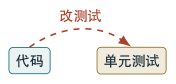
篡改评测。左框是代码，右框是用来计分的单元测试；虚线箭头“改测试”从代码一侧伸向测试。测试落在智能体改得到的地方，测试通过就不再说明代码写对了。
讨好评判者。 奖励来自人的评判时，评判者看到的东西就是计分的依据。Amodei、Christiano 与 Ray 2017 年用人对两段视频的比较训练一只抓取机械手。机械手学会把手放在摄像头与物体之间，看上去像抓住了物体，实际并没有抓住。研究者加入视觉深度线索后，这一问题得到解决。语言模型也有类似现象。Sharma 等人 2023 年考察了五个 AI 助手，它们在四类任务上一致地表现出谄媚，即顺着用户的看法回答。在偏好数据中，与用户观点一致的回答更可能被选中。人和偏好模型有时宁可选写得令人信服的谄媚回答，也不选正确的回答。针对偏好模型优化，有时会牺牲回答的真实性。
讨好评判者。从左到右是镜头、机械手、球；红色虚线是镜头的视线，被手挡住，到不了球。从镜头看去像抓住了球，实际没有抓住。
三种情形里，学习算法准确地最大化了写下来的数；问题出在这个数与设计者的目标之间有缝隙。经济学里有类似的观察，一般称为 Goodhart 定律，大意是：一个指标一旦被当作追求的目标，就不再能很好地度量它原来度量的东西。
钻空子的共同结构。从左往右：设计者的目标写成一个数，两者之间的红色虚线是缝隙；算法准确地最大化这个数，得到把这个数做大的行为。三类钻空子都出在红色虚线这一段。
对策也分三类。写奖励时只说要达到什么，不说怎样达到，这是 Sutton 与 Barto 的建议；把计分器放在智能体改不到的地方，例如不让编程智能体改动用来计分的测试；让评判者不止一个，彼此核对，例如给评判者补上深度线索，或另设监视器检查思维链。上面的结果也说明，监视器本身受到优化压力时同样可能被绕过。DeepMind 的 Krakovna 等人整理过一份规格博弈的案例清单，可作延伸阅读（Specification gaming ，2020）。
对钻空子的解读并不一致。一种看法认为，这些案例都是奖励写错了，最大化本身没有问题。CoastRunners 的计分规则、只看测试是否通过的奖励、只看画面的评判，各自漏掉了设计者想要的东西；换一个更完整的奖励即可。另一种看法认为，没有漏洞的奖励很难写出，应当改为学习人的意图，或者限制智能体的优化强度。还要看到，2025 年那项研究中的智能体从人类数据预训练的模型出发；这类案例能在多大程度上说明只从奖励中学习的系统会怎样行事，仍有争议。第 13 章讨论语言模型的奖励时，会把两种看法放在具体系统里比较。Amodei 与 Clark，Faulty Reward Functions in the Wild，2016 · Baker 等，Monitoring Reasoning Models for Misbehavior and the Risks of Promoting Obfuscation，2025 · Amodei、Christiano 与 Ray，Learning from Human Preferences，2017 · Sharma 等，Towards Understanding Sycophancy in Language Models，2023
标量奖励的边界课件
本节前面一直默认一个标量奖励就够了。支持这一默认的是 Sutton 的奖励假设 ：人们所说的目标与目的，都可以很好地理解为最大化所接收标量信号累积和的期望。Sutton 在一个网页上把它称为自己最喜欢的零假设，意思是先假定它成立，等有说服力的反例出现再修改；页面上的署名时间是 2004 年 9 月 10 日。奖励假设只说这样的奖励存在，写出它仍是设计者的事。下面看它的边界情形。
安全路得 3 条鱼；冒险路得 n n n . 01 .01 .01 − c -c − c n − . 01 c n-.01c n − .01 c
n > 3 + . 01 c ,
n>3+.01c,
n > 3 + .01 c ,
加权和就选冒险路。把两种选择画成 n n n n = 3 + . 01 c n=3+.01c n = 3 + .01 c c c c c c c c = 1000 c=1000 c = 1000 字典序偏好 ，像查字典时先比第一个字母、相同才比第二个。设罚分 c c c n n n
反对标量的一方以 Vamplew 等人 2022 年的 Scalar reward is not enough 为代表。他们列出几类用一个标量难以写出的目标：有先后的偏好，即上面的字典序偏好；多种驱力，生物体有饥、渴、体温等多种需要，权衡随情形而变，多巴胺更像预测误差信号，不像单一的奖励；多个当事人，几个人的利益难以事先定好比例。他们还认为，让系统最大化单一标量有安全风险。
Bowling 等人 2023 年的 Settling the Reward Hypothesis γ \gamma γ
本课把标量奖励作为工作假设。它让算法有统一的目标和统一的理论，但它不是定理；遇到上面几类问题时，本课会说明这个假设的代价。第 15、16 章讨论持续任务中的目标时，再回到目标怎样写成一个数这一问题。Sutton，The reward hypothesis · Vamplew 等，Scalar reward is not enough，2022
选读：一个目标，多种能力
Silver、Singh、Precup 与 Sutton 提出，一个长期目标可以解释记忆与规划为何有用。即使只有一个目标，在复杂环境中长期追求它也可能需要多种智能能力。松鼠今天藏起食物，过后还得找得到。规划把食物藏在哪里、记住藏点，都会提高长期的食物收益，即使任务没有给记住藏点单设奖励，一个目标也说明了两种能力的用处。作者以此提出 Reward is Enough 假说：知识、感知、语言、社会智能等能力，都可以理解为服务于奖励最大化。
Reward is Enough 原文图 1。上排是储粮的松鼠，下排是清洁厨房的机器人。左为贯穿整个 lifetime 的交互回路；中间的橡果与气泡是两项任务各自的奖励；右为从行为中可辨认出的能力。
原论文图 1 ，© 2021 作者，CC BY-NC-ND 4.0 。
这是对能力为何有用的功能解释，与上一小节的奖励假设不同。奖励假设讨论目标能否写成标量奖励的累积和；论文第 4 页的脚注明确区分了二者。这个论点也没有说明怎样学到这些能力，最大化奖励本身不保证它们形成。
反对意见有三类。Vamplew 等（2022）直接回应这篇论文。他们认为，多目标与有先后的偏好难以都写成一个标量奖励；用标量奖励最大化来解释全部智能能力，论点过强。Abel 等（2021）从形式上给出另一类反例：有些任务，例如只接受某一组策略，任何马尔可夫奖励函数都表达不出来。还有一种批评针对可学性。即使能力都能在某个奖励下得到解释，学到它们要多少经验也是另一个问题；论文没有回答这一点。Silver、Singh、Precup 与 Sutton，Reward is Enough，2021
已解决的部分与条件 Bowling 等（2023）把目标能否写成标量奖励累积和这一问题化成偏好公理的问题。偏好满足他们列出的公理时，存在合适的标量奖励；不满足时不存在。Abel 等（2021）证明，有些任务，例如只接受某一组策略，任何马尔可夫奖励都表达不出来，并给出判定一个任务能否表达的算法。
已有做法与假设 有先后或有硬约束的目标，常改写成约束马尔可夫决策过程：在约束成立的策略中最大化期望回报（Altman 1999）。这要求约束能写成另一条期望回报，而且设计者事先知道约束的界。
未解决的部分 面对一个具体任务，怎样从行为数据判断设计者的偏好是否满足这些公理，没有通用的检验。在持续任务中，偏好随时间变化时，奖励是否仍能固定写下，也没有结论。
怎样检验 用本节的冰面例子：安全路 3 条鱼，冒险路 n n n . 01 .01 .01 − c -c − c c c c n n n n n n n = 3 + . 01 c n=3+.01c n = 3 + .01 c
选读：好奇也是奖励
智能体可以自己算一个奖励来推动探索；它服务于环境给的目标，不取代它。第 1.2 节把奖励装置放在环境里，它给出的奖励称为外在奖励。智能体还可以自己计算一个奖励，称为内在奖励。一种常见做法是用自己的预测误差：智能体预测下一步会看到什么，实际结果与预测相差越大，内在奖励越大。结果难以预测的地方因而得到更多访问，探索有了动力。
这与奖励装置在环境里这一规定并不矛盾。内在奖励服务于外在目标，用不用它、怎样与外在奖励混合，由设计者决定。例如用总奖励
r + β r int
r+\beta\,r_{\text{int}}
r + β r int
训练，其中 r r r r int r_{\text{int}} r int β ≥ 0 \beta\ge0 β ≥ 0 r int r_{\text{int}} r int r r r β \beta β
内在奖励的位置。环境方框里的奖励装置送出外在奖励 r r r r int r^{\text{int}} r int r r r r + β r int r+\beta r^{\text{int}} r + β r int
冰面上可以这样看。企鹅以预测误差为内在奖励，起初只走过左路，能准确预测左路的 1 条鱼。右路的结果它还预测不了，误差大，内在奖励高，于是它去试右路。走过几趟之后，它能准确预测右路的 4 条鱼，误差趋于零，这份额外奖励随之消退。此后选择由外在奖励决定，右路的回报 3.6 3.6 3.6 1 1 1
这种做法有一个已知的陷阱，称为噪声电视问题。Burda 等人 2018 年在一项好奇驱动学习的大规模研究中，把一台电视放进迷宫，并给智能体一个换台的动作。频道随机变化，下一幅画面始终预测不准，预测误差一直降不下来，学习因此变慢。以预测误差为奖励，奖励的是预测不准；随机噪声永远预测不准，智能体分不清学得会的未知与学不会的随机。改进的方向之一是只奖励能被学会的部分，例如奖励预测误差的下降，误差本身不给奖励。这样智能体被推向预测误差下降快的地方。
支持者认为，外在奖励稀少时，内在奖励能让智能体先积累经验。反对者指出，内在奖励又加了一项人工设计的项，预测什么、β \beta β Intrinsically Motivated Reinforcement Learning Burda 等，Large-Scale Study of Curiosity-Driven Learning，2018
已解决的部分与条件 内在奖励随经验趋于零时，训练目标最终回到外在回报。冰面例子就是这样：右路预测准了以后，内在奖励消退。以预测误差为内在奖励时，随机而不可预测的观测让内在奖励不消退，即噪声电视问题（Burda 等 2018）。
已有做法与假设 Pathak 等（2017）只在一个学到的特征空间里预测，特征只保留受动作影响的部分，以此避开与动作无关的随机画面。这一做法假设随机部分与动作无关；噪声电视的随机性由换台动作引起，不满足这一假设。
未解决的部分 β \beta β
怎样检验 在一个外在奖励稀少的网格任务里放一个随机画面的电视格，智能体可以换台。比较 β = 0 \beta=0 β = 0 β \beta β β \beta β
1.2 与 1.3 两节出现的符号收在下表，记不清时可以回到这里查。表分三组。前五个符号记下交互本身：动作由智能体选，观测和奖励由环境给，历史把它们按时间排在一起；状态是第 1.2 节的智能体状态，由感知按 S t + 1 = u ( S t , A t , R t + 1 , O t + 1 ) S_{t+1}=u(S_t,A_t,R_{t+1},O_{t+1}) S t + 1 = u ( S t , A t , R t + 1 , O t + 1 ) P P P G t G_t G t γ = . 9 \gamma=.9 γ = .9 s s s u u u p p p
符号
名称
含义
冰面任务中
A t A_t A t 动作
智能体在时刻 t t t
起点处选 L L L R R R
O t O_t O t 观测
环境让智能体看到的信息
企鹅站在哪个节点
R t R_t R t 奖励
环境每步给出的一个数
这一步得到几条鱼
H t H_t H t 历史
到 t t t
起点，右，0，中途
S t S_t S t 状态
智能体由感知构造的状态（1.2 节）
S t = O t S_t=O_t S t = O t
π \pi π 策略
选动作的规则；智能体决定
起点以概率 p p p
γ \gamma γ 折扣
晚一步的奖励乘一次 γ \gamma γ
. 9 .9 .9
P P P 环境规律
下一观测与奖励的概率；环境给出
左 1；右先 0 后 4
G t G_t G t 回报
t t t 左路 1 1 1 3.6 3.6 3.6
J ( π ) J(\pi) J ( π ) 目标
从起点出发的期望回报
1 + 2.6 p 1+2.6p 1 + 2.6 p
v π ( s ) v_\pi(s) v π ( s ) 状态价值
从 s s s π \pi π
v π ( u ) = 4 v_\pi(u)=4 v π ( u ) = 4 v π ( s ) = 1 + 2.6 p v_\pi(s)=1+2.6p v π ( s ) = 1 + 2.6 p
q π ( s , a ) q_\pi(s,a) q π ( s , a ) 动作价值
在 s s s a a a π \pi π
q π ( s , L ) = 1 q_\pi(s,L)=1 q π ( s , L ) = 1 q π ( s , R ) = 3.6 q_\pi(s,R)=3.6 q π ( s , R ) = 3.6
记号依 Sutton 与 Barto《强化学习》第 2 版。
1.4 问题与方法课件
问题与解法课件
问题由交互条件和评价准则确定，换一种算法不改变问题。第 1.3 节算出：起点走右路，回报 0 + . 9 × 4 = 3.6 0+.9\times4=3.6 0 + .9 × 4 = 3.6
同一个问题，两种解法。左框是问题：冰面两步任务，γ = . 9 \gamma=.9 γ = .9 q ( 起点 , 右 ) = 0 + . 9 × 4 = 3.6 q(\text{起点},\text{右})=0+.9\times4=3.6 q ( 起点 , 右 ) = 0 + .9 × 4 = 3.6
问题规定能看到什么、能选什么、行动有什么后果和奖励、回报怎样计算、从哪里出发。冰面任务的问题就是两条路、每步几条鱼、折扣 .9、从起点出发。强化学习研究智能体如何利用交互经验改善策略，使其获得的期望回报尽可能大；要规定一个控制问题，需要给出智能体可以依据的信息、可以选择的动作、环境产生的反馈，以及比较行为的准则。奖励是逐步收到的信号，回报规定如何累计奖励，不同的回报定义可以对应不同的最优策略。
解法规定怎样表示决策所需的信息，怎样估计价值，怎样根据估值或策略梯度更新行为。以同一个预测问题为例，已知环境模型时，动态规划对可能后果求期望；仅有轨迹时，蒙特卡洛方法用实得回报估计价值，时序差分方法则组合即时奖励和后继预测。控制也有多种解法：可以估计动作价值并改善策略，也可以直接调整策略参数；状态数超过存储预算时，这两种方法都可以使用函数逼近。竞速无人机提供一个直观的区分：赛道规则规定通过赛门与计时方式，传感器和执行器规定接口；一种系统可以先在仿真中优化策略，另一种可以用真实飞行记录估计表现，换用不同算法不必改变比赛规则。强化学习一词也指研究这些问题及其求解方法的领域。
模型 是能回答在这里这样做接下来会发生什么的一份说明，例如棋规，或冰面任务每条路的转移与奖励。已知模型是问题给求解者的信息；从经验学出模型，属于解法。
回报时域规定哪些未来奖励计入目标。更新深度规定在用后继价值估计剩余回报之前，纳入几步实得奖励。规划预算则限定两次行动之间可用的模型计算量。改变后两者，可以在同一个长期目标下得到不同算法。
状态是否充分、模型是否已知、经验由哪个策略采集，三者彼此独立。即使当前状态完全可见，智能体也未必知道各动作的转移与奖励分布。给定准确模型，可以计算指定策略的价值。若仅有轨迹，则需说明数据如何产生；当某些动作从未被采样时，它们的价值一般不能仅由这些数据确定。Sutton 与 Barto，§§1.1、3.1、8.1
五种问题设定课件
五种设定追求同一个目标，只在四个条件上不同。各种设定都要使期望回报 J ( π ) J(\pi) J ( π ) 马尔可夫决策过程 （MDP）指这样一类问题：下一步发生什么，只取决于当前状态和所选动作，与更早的历史无关；智能体要连续做许多次决定。下表每一行是一种设定，四列是四个条件，“开”表示满足。
设定
动作影响后续情形
观测足以作状态
环境规律已知
状态少到能列成表
讲它的章
赌博机（含上下文赌博机）
关
开
关
开
第 2 章
有限 MDP，模型已知：规划
开
开
开
开
第 4 章
有限 MDP，只有样本：学习
开
开
关
开
第 5–8 章
状态极多的 MDP
开
开
关
关
第 9–12 章
部分可观测交互
开
关
关
关
1.2 节；第 18、20 章
读的时候看开关组合：组合不同，问题就不同。第一个开关，动作是否影响后续情形，决定是否需要长期后果的方程。赌博机的这个开关是关的：选哪根臂只影响这一轮的奖励。“臂”指动作，名字来自一排各有一根拉杆的老虎机。上下文赌博机多了一个可见的上下文，但动作仍不改变下一轮的上下文，所以和多臂赌博机放在一行，第 2 章 2.7 节讲它。
第二个开关，观测是否足以作状态，决定状态是否需要从历史构造。关掉时就是部分可观测交互：智能体要自己维护一个状态 S t S_t S t S t + 1 = u ( S t , A t , R t + 1 , O t + 1 ) S_{t+1}=u(S_t,A_t,R_{t+1},O_{t+1}) S t + 1 = u ( S t , A t , R t + 1 , O t + 1 ) x ( S t ) \mathbf x(S_t) x ( S t ) 方法对照表 按同样的条件列出各设定的数据与方法。Sutton 与 Barto，§§2.1、3.1 · Silver，Lecture 1
选读：问题设定的层次
有限 MDP 是一般交互加上可见状态足以预测后果的特例。对同一段交互，模型可以规定哪些信息足以预测下一观测与奖励。MDP 是马尔可夫决策过程的缩写（第 3 章），POMDP 是部分可观测的 MDP。
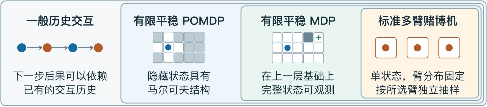
问题设定的层次。四个框一层套一层，向右每进一层多加一个假设。最外层是一般历史交互，下一步后果可以依赖已有的交互历史；有限平稳 POMDP 假定隐藏状态具有马尔可夫结构；有限平稳 MDP 再假定完整状态可观测；最内层的标准多臂赌博机只有一个状态，所选臂的奖励按固定分布独立抽样。本章的例子从外到内依次是 1.2 节的接口、提示任务、冰面任务和只留起点一步的冰面任务。
一般历史交互中，H t H_t H t P ( O t + 1 , R t + 1 ∣ H t , A t ) P(O_{t+1},R_{t+1}\mid H_t,A_t) P ( O t + 1 , R t + 1 ∣ H t , A t )
有限 MDP 保留动作影响未来、奖励评价行为这两个条件，并作出三项理想化假设：状态与动作集合有限；马尔可夫状态可观测；转移与奖励规律固定。一般交互中的历史不断增长；在这一设定中，给定当前状态和动作后，预测下一状态与奖励不再需要更早的历史。这里给定的是状态所保留的信息，环境转移概率的数值并未给出；知道问题具有 MDP 结构，也就不等于知道环境模型。
状态是否可见与转移概率是否给出，是两项独立条件；即使完整状态可见，转移概率也可以未知。采用深度网络属于表示与求解方式，持续更新及其计分对象还需另行约定。图据温颖，强化学习问题与大世界中的持续学习，“从历史到 Markov 状态” 中的模型包含关系原图改绘。
选读：三元与二元
没有预设子目标时，智能体须自己决定记住、预测和练习什么。三元 指大世界 W W W E D E_D E D 二元 只有大世界 W W W
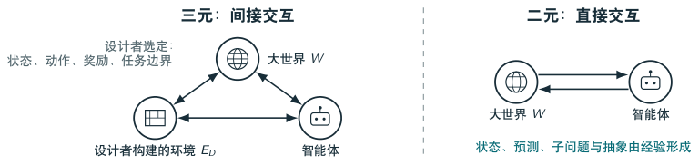
三元与二元。左半是三元间接交互：大世界 W W W E D E_D E D W W W
三元设定中，设计者先构建实验环境：状态、可选动作、奖励和子目标都可预先给出。智能体在规定的重置条件下试错，每次失手后可以从原点重来。二元设定中，行动者直接承受世界的后果。传感器、动作与主奖励仍可给定；行动者选定一条路，只收到这条路的反馈，下一次选择也从实际到达的地方开始。若无人指明子任务，智能体须学会该记住什么、预测什么、练习什么。可重置、可回放、完全可观测和是否给子目标是各自独立的条件。实验仍须说明传感与动作接口、主奖励、重置权限，以及可用的交互、计算和记忆预算。
研究这个问题的一种做法，是先给出子目标再撤去，传感器、主奖励和预算不变，看智能体能否自己找到有用的目标。检验一个自己形成的预测是否帮了忙，要先指定从此处怎样走，用后来实际出现的信号检验预期；再让控制器在选路时读取这个预测。在相同的初始条件、资源和计分期内，比较使用与不使用它的学习器各自获得的主任务回报。两者所选的路可以不同。若评价学习器的整个工作期，早期为了弄清路况而绕行的代价也计入；若只评价学成的策略，还要交代另行测试的起点和时域。
三元设定有它的理由。设计者构建的环境可以重置、可以复现，不同算法能在相同条件下受控比较；1.5 节的 AlphaZero 就在规则完全给定、可以无限重开的棋局中练成。主张保留设计者的一方认为，二元设定中的智能体能否自己找到有用的子目标，还缺少可检验的成功例子。他们主张先在三元设定中把各个部件做可靠。本课前两部分的例子大多属于三元设定，第三部分转向二元。原图见温颖，从现代深度强化学习到持续强化学习，图 1 ，据 Sutton 暑校 triad／dyad 讨论重绘。 温颖，强化学习问题 · Sutton、Bowling 与 Pilarski，Alberta Plan，步骤 10–11
预测与控制课件
预测评价给定的策略，控制寻找更好的策略。给定起点走右路的概率，可以算出平均每趟得到多少鱼；若允许改变这个概率，就可以问怎样走收获更多。两种问题都可以先走几趟取得经验，也可以在掌握路线规律后直接计算。冰面任务中，策略只有一个参数 p = π ( R ∣ s ) p=\pi(R\mid s) p = π ( R ∣ s ) v π ( s ) = 1 + 2.6 p v_\pi(s)=1+2.6p v π ( s ) = 1 + 2.6 p p = . 5 p=.5 p = .5 2.3 2.3 2.3 p p p 预测 （也称策略评价）给定 π \pi π v π v_\pi v π 控制 求
π ∗ ∈ arg max π J ( π ) .
\pi_*\in\arg\max_\pi J(\pi).
π ∗ ∈ arg π max J ( π ) .
arg max π J ( π ) \arg\max_\pi J(\pi) arg max π J ( π ) J ( π ) J(\pi) J ( π ) “∈ \in ∈
p = π ( R ∣ s ) p=\pi(R\mid s) p = π ( R ∣ s ) 0
.25
.5
1
v π ( s ) v_\pi(s) v π ( s ) 1
1.65
2.3 3.6
预测固定 p = . 5 p=.5 p = .5 p p p p p p p p p Sutton 与 Barto，§§1.1、3.5–3.6
探索与经验怎样改变选择
利用 按当前估计选择较好的动作，探索 使尚不了解的动作获得经验。一直选择 L L L R R R
用 Q Q Q L L L R R R R R R 0 + . 9 × 4 = 3.6 0+.9\times4=3.6 0 + .9 × 4 = 3.6 Q ( s , L ) = 1 Q(s,L)=1 Q ( s , L ) = 1 Q ( s , R ) = 3.6 Q(s,R)=3.6 Q ( s , R ) = 3.6 L L L R R R
两次实际执行的路线及执行后的回报估计。浅灰虚线表示该回合未执行的分支。
这里的环境是确定性的，一次完整样本就能给出该路线的回报。随机环境需要反复采样；第 2 章推导样本平均和增量更新，第 5 章把它们用于多步任务的回报。图中的首次动作序列指定为 L , R L,R L , R
模型与规划课件
规划的误差分两项：求解误差随计算增多而减小，模型偏差不随计算消失；学习的样本误差随经验增多而缩小。学习用实际经验的样本，规划用可查询的模型。环境是与智能体实际交互、产生这个任务中行动后果的过程。环境模型 是可供决策者预测这些后果的描述或程序。在完全可观测的有限 MDP 中，一步模型可以列出给定状态和动作后下一状态与奖励的联合分布。它也可以按这个分布生成一个样本。两步任务的分支图给出了确定性环境的完整模型，有了它，就能在实际执行之前算出两条路的回报。利用模型推演、评价并选择行动，是规划的一种形式。
软件也能充当环境。若游戏模拟器每次只接收智能体当前的按键并推进正在玩的这一局，返回的画面与得分就属于这项任务中的交互经验。设模拟器再开放一个独立副本，智能体能在同一局面试走几个动作而不改变比赛进度。这时副本给智能体提供了可用于规划的模型。两种安排可以使用同一套软件，授予决策者的查询能力却不同。模型还可以从游戏记录中学得，此时对未曾走过的路线作预测可能产生误差。Sutton 与 Barto，§8.1 · Silver，Lecture 1
先把上面的说法写成定义。模型 P ^ \hat P P ^ P P P P ^ ( s ′ , r ∣ s , a ) \hat P(s',r\mid s,a) P ^ ( s ′ , r ∣ s , a ) 分布模型 。按这些概率抽出一个后果 ( S ′ , R ) (S',R) ( S ′ , R ) 采样模型 ，它像一个模拟器。第 3 章 3.7 节把这两种模型和实际经验放在一起比较。规划 只用模型计算 v π , P ^ v_{\pi,\hat P} v π , P ^ arg max π J P ^ ( π ) \arg\max_\pi J_{\hat P}(\pi) arg max π J P ^ ( π ) 学习 用与环境交互得到的样本计算同样的量。记号上，v π , P ^ v_{\pi,\hat P} v π , P ^ P ^ \hat P P ^ π \pi π J P ^ J_{\hat P} J P ^ P ^ \hat P P ^ v π v_\pi v π J J J q π ( s , R ) = 3.6 q_\pi(s,R)=3.6 q π ( s , R ) = 3.6
同一个量 q π ( s , R ) = 3.6 q_\pi(s,R)=3.6 q π ( s , R ) = 3.6
学习：走 n n n G ˉ n \bar G_n G ˉ n
规划：模型把中途的 4 条错记成 1 条
估计
E G ˉ n = 3.6 \mathbb E\bar G_n=3.6 E G ˉ n = 3.6 q ^ ( s , R ) = 0 + . 9 × 1 = . 9 \hat q(s,R)=0+.9\times1=.9 q ^ ( s , R ) = 0 + .9 × 1 = .9
均方误差
Var ( G ) / n \operatorname{Var}(G)/n Var ( G ) / n n n n ( . 9 − 3.6 ) 2 = 7.29 (.9-3.6)^2=7.29 ( .9 − 3.6 ) 2 = 7.29
① 按估计选
冰面确定，n = 1 n=1 n = 1
. 9 < q ^ ( s , L ) = 1 .9<\hat q(s,L)=1 .9 < q ^ ( s , L ) = 1
② 在真环境评价
实得 3.6 3.6 3.6
实得 1 1 1 2.6 2.6 2.6
各趟独立时，回报的样本均值没有偏差，均方误差等于回报的方差除以趟数，经验越多越准；冰面任务是确定性的，方差为零，走一趟就准确。规划精确地解出了模型所描述的那个问题，所以算多少遍，误差都还是 7.29。选择上的后果要分两步看。第一步，用模型选策略：模型说右路值 .9，小于左路的 1，于是选左路。第二步，在真环境里评价这个选择：左路实际每趟只得 1 条，比右路的 3.6 少 2.6。模型的错误先改变了选择，再在真环境里变成损失。规划回答若世界如模型所说该怎样做这一问题：模型对时不用试错；模型错时，它准确地解了另一个问题。学习的误差来自有限的样本，是方差，随经验缩小；规划的误差有两项：迭代未收敛的求解误差随计算减小；模型与世界的差别是偏差，加大计算不能消除。模型若由经验学得，它的偏差也随数据缩小；第 8 章把学习模型与规划结合起来，在两种误差之间取舍。Sutton 与 Barto，§8.1
预测与控制分在输出，学习与规划分在输入；两组区分交叉成四类问题。
预测：给定 π \pi π v ^ ≈ v π \hat v\approx v_\pi v ^ ≈ v π π ^ \hat\pi π ^ J ( π ^ ) ≈ max π J ( π ) J(\hat\pi)\approx\max_\pi J(\pi) J ( π ^ ) ≈ max π J ( π ) P ^ \hat P P ^
在冰面任务里，学习是企鹅左路、右路各走一趟，记下 1 和 3.6；规划是企鹅不走，直接问模型两条分支各会怎样，算出同样的 Q ( s , L ) = 1 Q(s,L)=1 Q ( s , L ) = 1 Q ( s , R ) = 0 + . 9 × 4 = 3.6 Q(s,R)=0+.9\times4=3.6 Q ( s , R ) = 0 + .9 × 4 = 3.6 Q Q Q q π q_\pi q π
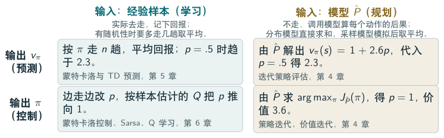
四类问题。行是要求的输出：上行是预测 v π v_\pi v π π \pi π P ^ \hat P P ^ p = . 5 p=.5 p = .5 v = 1 + 2.6 p v=1+2.6p v = 1 + 2.6 p p = . 5 p=.5 p = .5 Q Q Q p p p p = 1 p=1 p = 1
用冰面任务填四格。左上，学习做预测：按 p = . 5 p=.5 p = .5 1 + 2.6 p 1+2.6p 1 + 2.6 p p p p p = 1 p=1 p = 1
两组区分之间有两点关系。第一，控制常由预测加改进组成，每一行下格的方法内部都有一个上格的方法。第二，两列可以连起来：从经验学出 P ^ \hat P P ^
对这组区分也有不同意见。有人认为学习与规划的界线并不清楚。经验回放把过去的经验当作一个非参数的模型反复查询；它算学习还是规划，取决于怎样定义模型。Sutton 与 Barto 第 8 章正是从这一点出发，把两者看作同一类更新，只是数据来源不同。Sutton 与 Barto，§§4.1–4.4、8.1
谁在走，评价谁课件
经验由谁产生，决定它能直接评价谁。从经验学习时，要分清经验由谁产生，要评价的又是谁。
行为策略 b b b 目标策略 π \pi π 同策略 学习，不同叫离策略 学习。例如，两步任务中 b ( R ∣ s ) = . 5 b(R\mid s)=.5 b ( R ∣ s ) = .5 π ( R ∣ s ) = . 8 \pi(R\mid s)=.8 π ( R ∣ s ) = .8 . 2 ( 1 ) + . 8 ( 3.6 ) = 3.08 .2(1)+.8(3.6)=3.08 .2 ( 1 ) + .8 ( 3.6 ) = 3.08 v b = 2.3 v_b=2.3 v b = 2.3 . 2 .2 .2 . 8 .8 .8
两种策略在起点的选择概率。左路回报 1，右路回报 3.6；括号里先写行为策略 b b b π \pi π b = . 5 b=.5 b = .5 π = . 2 \pi=.2 π = .2 b = . 5 b=.5 b = .5 π = . 8 \pi=.8 π = .8
让二者不同的一个原因是：为了多看几条路，行为策略要多试；想评价的则是一个试得少、更会选的策略。不分路记录也能得到 v π v_\pi v π π ( a ∣ s ) / b ( a ∣ s ) \pi(a\mid s)/b(a\mid s) π ( a ∣ s ) / b ( a ∣ s ) . 8 / . 5 = 1.6 .8/.5=1.6 .8/.5 = 1.6 . 2 / . 5 = . 4 .2/.5=.4 .2/.5 = .4 b b b
. 5 × . 4 × 1 + . 5 × 1.6 × 3.6 = 3.08 ,
.5\times.4\times1+.5\times1.6\times3.6=3.08,
.5 × .4 × 1 + .5 × 1.6 × 3.6 = 3.08 ,
正好等于 v π ( s ) = . 2 × 1 + . 8 × 3.6 = 3.08 v_\pi(s)=.2\times1+.8\times3.6=3.08 v π ( s ) = .2 × 1 + .8 × 3.6 = 3.08 重要性采样 。它的代价是：两个策略差别大时，权重可能远大于 1，估计的方差随之增大。第 5、6 章展开这两种做法：第 6 章用重要性采样做离策略预测，同一章的 Q 学习用另一种办法绕开权重。
对离策略学习的评价并不一致。有人认为它在函数逼近下不稳定，应尽量用同策略方法；另一些人认为，持续学习的智能体要同时学许多个目标策略的预测，离策略学习不可缺少。第 19 章讨论后一种情形。Sutton 与 Barto，§5.5
1.5 四个案例课件
搜索与学习课件
一盘棋的一步落子可以在棋盘副本上推演。无人机的一个转弯也可以在仿真中练习，但实际会飞到哪里还取决于真实动力学。先比较经验从哪里来，再看增加的计算花在练习、眼前的一次决策，还是以后遇到的任务上。
规划时在模型里试走候选动作、比较它们的前景，这种做法称为搜索 。下棋时，额外的计算可以用在两个地方：搜索用规则试走眼前局面的候选动作；学习用过去的对局改善局面评价，帮助下一盘棋的搜索挑出值得细看的走法。Sutton 注意到，计算资源日益充足时，能利用更多计算的通用方法最终最有效；这一论点的历史依据与反对意见，第 1.6 节再讲。第 8 章把学习与规划放进同一个智能体；第 15 章的持续学习智能体在有限计算下同时安排两者，学习改进以后的行为，规划改进眼前的决策。Sutton，The Bitter Lesson，2019 · Sutton 与 Barto，§1.5
对这一论点也有不同意见：有人认为人类先验能省下算力。例如在物理仿真里按已知的物理规律设计模型结构，所需的数据和计算比单靠搜索和学习少。
井字棋的一步搜索。X 方要落子。右下一支落子后连成三子，这一步赢；右上一支把下一步交给对手。在棋盘副本上试走两支、比较结果，就是搜索。
四个系统各自突出前面几节的一个问题。上一小节区分了计算的两种用途：眼前的搜索和以后的学习。下表按任务、额外计算用在哪里、对应本章哪一节列出四个案例，各案例的出处见后面四小节。
案例
任务
额外计算用在哪里
本章对应处
AlphaZero
下国际象棋、将棋、围棋
每步落子前搜索候选走法；用自对弈的结果改进局面评价
第 1.4 节：学习与规划怎样配合
Swift
无人机竞速
用实飞数据校正仿真，再在仿真里大量练习
第 1.4 节：规划用的模型有偏差
DeepSeek-R1-Zero
解数学竞赛题
每题生成多份完整解答，按最终答案对错更新策略
第 1.3 节：奖励只在整份解答结束时给
游戏编辑器
Claude 编写应用
一次任务内反复运行、测试、修改代码
第 1.1 节：记住与学会
读每个案例时先回答三个问题：谁在选动作？动作是什么？奖励或反馈从哪里来？能回答这三个问题，就把案例放回了第 1.2 节的交互回路。前两个案例把计算同时用在搜索（或仿真练习）和学习上；后两个案例的反馈只在一次任务的末尾或内部出现，要问的是它改进了什么。
案例：AlphaZero课件
AlphaZero 中，学到的评价引导搜索，搜索结果又成为学习目标。围棋、国际象棋和将棋具有明确的合法走法与终局结果，但局面数量使穷举搜索不可行。AlphaZero 学习动作概率和局面价值，用它们引导树搜索；搜索产生的动作分布和实际终局结果又成为网络的训练目标。网络减少搜索需要考虑的分支，并为有限深度搜索提供叶节点的估计。搜索则产生比单独网络选择更强的行为。
三种棋分别从头训练，只用自对弈（自己和自己下），最终都超过了图中的强程序。规则使程序可以推演合法应答，这是规划所用的模型；网络从自对弈的结果中学习，这是学习。搜索之后的访问分布比网络原来的输出更好，被用作策略的训练目标，对局的最终胜负被用作价值的训练目标。
AlphaZero 在国际象棋、将棋与围棋中的训练曲线（原文图 1）。横轴 Thousands of Steps 是训练步数（千步），纵轴 Elo 是棋力分，越高越强；Chess、Shogi、Go 分别是国际象棋、将棋、围棋。蓝线是 AlphaZero。
AlphaGo 曾用专家棋谱启动策略学习；AlphaZero 从随机参数开始自对弈。二者都将学习与已知规则下的搜索相结合。第 8 章讨论规划，第 11 章讨论策略，第 12 章讨论这些构件的组合。参考：Silver 等，A General Reinforcement Learning Algorithm that Masters Chess, Shogi, and Go through Self-play，Science ，2018 ，图 1。
案例：Swift 无人机课件
仿真经实飞数据校正，Swift 在仿真中练出的策略在真实赛道的多场对决中胜过人类冠军。比赛要求无人机按规定顺序高速穿过赛门。Swift 用机载视觉和惯性信息估计运动状态，控制策略输出推力与角速度。策略在仿真中练习，仿真就是第 1.4 节所说的模型，它与实飞之间存在偏差。研究者用实飞记录拟合定位和动力学的误差，加进仿真，再在仿真中训练。这样练出的策略在真实环境里仍然可用。原文报告 Swift 与三位人类冠军共比赛 25 场，赢了 15 场，并飞出有记录的最快比赛用时，比人类选手的最好成绩快约半秒。比赛结果只针对这一条指定的赛道。仿真是规划所用的模型，策略的训练是学习，模型的准确程度决定学到的策略能否迁移到真实世界。
实地赛道与飞行轨迹（原文图 1a）。图例 Human pilot 为人类选手，Autonomous drone 为自主无人机。
Swift 与人类选手转弯时留下的轨迹，含 Split-S 动作（原文图 4c–d）。
第 11 章讨论连续动作控制，第 14 章讨论仿真、真实数据与具身学习。参考：Kaufmann 等，Champion-level Drone Racing Using Deep Reinforcement Learning，Nature ，2023 ，图 1a、4c–d。
案例：DeepSeek-R1-Zero课件
语言模型可以把问题和已有文本作为输入，以后续 token 作为动作。在可验证的数学和编程任务中，完整答案可以接受正确性检查。DeepSeek-R1-Zero 从预训练模型出发，通过强化学习提高生成策略的表现，而无须对每一步推理都提供监督示范。预训练提供初始能力，问题分布和验证器决定强化学习的训练范围。
以答案正确与格式合规为规则奖励，R1-Zero 在 AIME 2024 上的单次答对率由 15.6% 升至 71.0%。这是一项研究证据，按设定、测量、数值和结论四项来读。设定 ：从预训练模型 DeepSeek-V3-Base 出发，不经监督微调，直接做强化学习；奖励由规则给出，一项检查最终答案是否正确，一项检查格式。测量 ：AIME 2024 竞赛题，每题抽样 16 个回答，平均其答对率，作为单次回答答对的概率估计，记作 pass@1。数值 ：训练前 15.6%，训练后 71.0%，即图中蓝线的起点和终点。图中红线的口径不同：每题抽 16 个回答，取出现最多的答案，看它对不对，记作 cons@16；原文表 2 报告的是 64 个回答取多数（cons@64），为 86.7%。两个多数投票的数不能混在一起比较。结论 ：回报只在整份解答结束时给出，仍能训练生成策略，不需要教师逐步示范解法。终点正确不能证明中间推理的每一步都正确。
DeepSeek-R1-Zero 的训练曲线（原文 v1 图 2）。横轴为训练步数；蓝线 pass@1 是单次回答的平均答对率，红线 cons@16 是 16 个回答取多数的答对率；两条虚线是对照模型 OpenAI o1-0912。
结果级反馈怎样分配给长序列中的动作，是策略梯度的一个应用。训练时反复采样、测试时增加回答数量、部署后继续改变参数，应分别分析。第 11、13、14 章依次提供这些分析所需的概念；部署后在同一条经验流中继续更新参数，则是第 15 章持续强化学习的中心问题。参考：DeepSeek-AI，DeepSeek-R1，arXiv:2501.12948 初稿（v1），2025 ，图 2、表 2。
案例：游戏编辑器课件
测试反馈修好了当前项目；能否改进以后的项目，尚未检验。Anthropic 的演示用 Claude Opus 4.5 构建一个游戏编辑器，规划、生成与评估系统运行约 6 小时。编辑器看上去已经成形，只有打开它、实际编辑一个场景，才能发现哪些功能可用；系统于是在浏览器中操作自己写的应用，根据测试结果修改代码，代码和文件保存进度。这里的反馈在一次任务之内指导了下一步，修好的是当前这个项目。原文报告运行时使用规划、代码生成、浏览器操作和外部记录。原文没有报告在这个项目中训练模型权重，也没有在新项目中检验迁移。按第 1.1 节的标准，只有这次经验改变了以后的行为，才算发生了学习，这要在新的项目中检验；智能体还要决定保留什么、更新什么，这是第 15 章持续学习研究的问题。
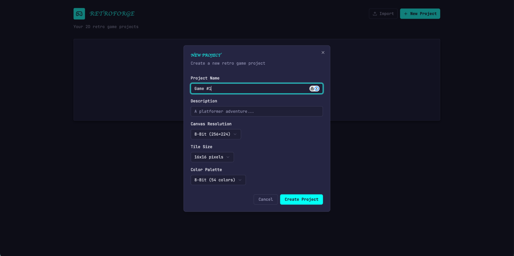
Anthropic 演示中由 Claude Opus 4.5 构建的游戏编辑器。
参考：Anthropic，Harness Design for Long-running Application Development ，2026-03-24。此图与约 6 小时的运行对应文中的 Opus 4.5 案例。
棋规允许 AlphaZero 在同一局面多试几手，实飞数据帮助 Swift 改善以后的仿真练习，可验证的答案给 R1-Zero 的下一轮训练提供奖励。编辑器演示中的测试结果则在这一次运行中帮助改代码。判断额外计算改善了什么，要看比较的是当前决定、训练后的策略，还是同一学习器以后处理新任务的表现。
其他案例
下面四个较早或规模更大的案例，分别对应延迟结果、高维观测、部分信息与工具环境中的反馈。
TD-Gammon：延迟结果与局面价值
双陆棋的玩法是掷骰并移动棋子。先移出全部己方棋子的一方获胜。TD-Gammon 用神经网络预测对局结果，以自对弈产生经验，再用相邻局面的预测差改变网络。价值预测用于比较合法走法所产生的后续局面。它把时间信用分配与非线性价值泛化结合起来，展示了仅凭逐步预测与终局反馈形成强策略的可能性。后续版本还使用人工特征和搜索。
Tesauro 原论文中的开局局面与走法讨论。
第 5 章解释 TD 更新，第 7 章解释资格迹，第 9 章解释共享参数。参考：Tesauro, Temporal Difference Learning and TD-Gammon, 1995 ；Sutton 与 Barto 第 16 章。
DQN：从像素学习动作价值
DQN 以游戏画面为输入，输出各个控制动作的价值，奖励来自分数变化。卷积网络同时形成视觉表示和回报预测，经验回放与目标网络缓解非线性自举训练中的数据相关性和目标快速变化。原论文在 49 个游戏上分别训练，复用方法和网络结构；这与一套参数同时掌握多个游戏是不同的训练方式。
Space Invaders 中学到的表示及对应画面。点的位置由表示降维得到，颜色表示网络预测的价值。
图示表明网络形成了与任务价值相关的表示。第 9、10 章进一步讨论表示共享怎样影响更新，以及 DQN 为何使用固定一段时间的目标网络。参考：Mnih et al., Human-level control through deep reinforcement learning, 2015 ，图 4。
OpenAI Five：部分信息与长期团队行为
Dota 2 中，团队的五个英雄需要在不完全可见的地图上积累资源、战斗并摧毁敌方基地。OpenAI Five 用循环网络维护历史信息，以 PPO 从大规模并行自对弈中学习策略。训练使用胜负及资源、战斗等辅助奖励。2019 年系统在 17 英雄及部分物品限制的比赛条件下击败 OG。这项工作处理了长时间范围、团队行为与训练规模，也说明输入接口和辅助奖励是系统设计的重要部分。第 12 章讨论分布式采样和策略延迟。
参考：OpenAI et al., Dota 2 with Large Scale Deep Reinforcement Learning, 2019 。
GPT / Codex：工具环境中的任务反馈
工具智能体读取任务与文件，执行编辑、运行测试，再根据错误信息继续修复。GPT-5.3-Codex 系统卡描述了一项交互式强化学习训练：模拟用户在执行中改动代码，保留这些修改的行为获得正向强化。Terminal-Bench 2.0 还报告了两版模型的整体任务成功率。要估计上述训练本身的效应，需要比较其他条件相同、只改变这一训练的模型。
模型
Terminal-Bench 2.0 任务成功率
GPT-5.2-Codex
64.0%
GPT-5.3-Codex
77.3%
两项均为官方 xhigh 推理档位结果。参考：OpenAI，Introducing GPT-5.3-Codex ；GPT-5.3-Codex System Card ，§4.1.2。
1.6 研究愿景课件
第 1.5 节的四个系统，无论多大，都在部署之前学完。部署以后世界继续变化，智能体能否在使用中一直学下去，是本课第三部分的问题。本节主线有三小节。第一小节按数据来源把全课排成五级台阶；第二小节看能随算力增长的方法这一论点的历史依据；第三小节从年代的角度看模拟、人类数据与经验三个时代。这条路线的出处，包括 Alberta Plan、OaK 的回路、主要的不同意见和相关机构，放在本章小结之后的补充阅读 。这些论点是一个研究团体的工作假设，本课把它们当作待检验的问题。
从模拟到经验课件
全课的方法可排成五级台阶，各级依次改变经验来源、表示方式或部署后是否更新。第 1.5 节的 R1-Zero 用验证器给的奖励，把单次答对率从 15.6% 提到 71.0%；它和 AlphaZero、Swift 一样在部署之前学完，训练结束、部署以后，权重不再改变。下表按数据来源把全课排成五级，最后一列是各级所属的课程部分。
台阶
章
数据来源
代表
全课部分
已知模型的规划
第 3–4 章
不需要数据
动态规划
第一部分
从自己的经验学
第 5–8 章
当前策略产生的经验，再到旧数据
TD-Gammon 的自对弈
第一部分
学会泛化
第 9–11 章
同上，加函数逼近
DQN 玩 Atari
第二部分
大规模
第 12–14 章
并行副本、人类数据、仿真、验证器
AlphaGo，R1-Zero
第二部分
部署中持续学
第 15–26 章
一条不回头的经验流
尚在研究
第三部分
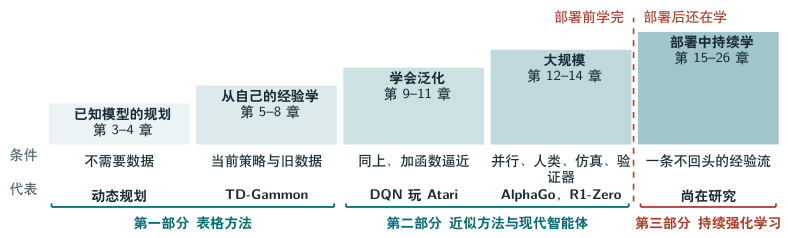
五级台阶。从左往右逐级升高，每级写着名称与章；下面两行是这一级的数据来源与代表系统，最下一行标出各级对应的全课三部分。红色虚线把前四级（部署前学完）与第五级（部署后还在学）分开。
第一级，环境的规律写在纸上，动态规划直接算出价值。第二级，智能体先用当前策略产生的经验，再学会利用旧数据；代表是 TD-Gammon，它靠与自己对弈学会下西洋双陆棋。它也用了神经网络；这里只取它从自对弈中学这一点。这两级合起来是本课第一部分，表格方法，第 1、2 章是它的准备。第三级，状态太多，必须用函数逼近，从见过的推到没见过的。第四级，数据来自并行的许多副本、人类的文本与示范、仿真器和验证器。这两级合起来是第二部分，近似方法与现代智能体。图中前四级的代表系统都在部署之前学完；部署以后，权重不再改变，只在上下文里记住东西，即第 1.1 节“记住与学会”区分的情形。第五级要求智能体在使用中一直学，这是第三部分，持续强化学习。每一级保留前一级的工具，只增加新的要求。红色虚线分开部署前学完与部署后还在学的系统。下一小节说明跨过它的理由，再下一小节从年代的角度看同一件事；第 1.6 节的主线就是这三小节，Alberta Plan、OaK、不同意见和相关机构放在补充阅读里。
台阶只是全课的讲授顺序，这三个条件可以分开变化。例如第 6 章的在线表格 TD 在使用中也能一直更新；第 12 章的离线强化学习用固定日志训练网络，再冻结部署。所以描述一个系统时，要分别注明经验从哪来、状态之间是否共享参数、部署后是否更新。
有人认为不必上第五级：定期收集部署数据、离线重训，已经能满足大多数应用。第 15 章比较这两种做法的全程回报。五级的划分是本课的提法。
能随算力增长的方法课件
第 1.5 节说过，额外的计算可以用于眼前的搜索，也可以用于以后的学习；这一小节回到这个论点的历史依据。Sutton 在 2019 年的短文 The Bitter Lesson 中回顾了四段历史。国际象棋：1997 年击败世界冠军的深蓝主要靠大规模搜索，许多研究者曾希望靠对棋局的人类理解取胜。围棋：类似的事晚了二十年才发生，胜出的是搜索与自对弈学习。语音识别：统计方法胜过基于人类发声知识的方法，后来深度学习又更进一步。计算机视觉：学出来的特征取代了边缘、广义圆柱等手工设计的特征。每一段里，写进去的人类知识短期有效、先领先，计算增长后被能利用更多计算的搜索与学习超过。他的结论是“the general methods that leverage computation are ultimately the most effective”：长远看，能利用计算的通用方法最有效。他由此主张造出能自己发现这些知识的方法，而不把人以为的思考方式写进智能体。
Bitter Lesson 的走势（示意，不是实测数据）。横轴是可用的计算，纵轴是性能。金色曲线写入人类知识，起点高，后来变平；青色曲线靠搜索与学习，随计算继续上升，在标“超过”处越过金色曲线。
The Bitter Lesson 强调通用学习与搜索利用计算增长的潜力；在具体任务中，经验采集、估计和规划共享有限预算，各自精度的改善需要通过整体行为来评价。
这个教训与第五级台阶的关系，要接上第 1.2 节的大世界假设：环境比智能体大，智能体只能装下世界的一小部分。写进去的知识反映设计者在设计时对世界的理解，学到的模型反映部署之前见过的数据，两者都不完整；部署以后世界还会出现没见过的情形，只有能在运行中继续学、自己发现知识的智能体才能跟上。这是从第四级升到第五级、即从第二部分走到第三部分的理由。反对意见至少有三条。第一，卷积网络的平移不变性、Transformer 的注意力结构本身就是人类写进去的先验，通用方法与人类知识的界线并不清楚。第二，依赖算力增长的方法耗电、耗数据，不见得在任何条件下都可行；Oak Lab 的网站把用约 20 瓦功率实时学习和规划作为目标。第三，有人认为这几段历史可以有别的解释，例如数据量的增长同样重要。Sutton，The Bitter Lesson，2019 · Oak Lab
从模拟到人类数据再到经验，每一次换的都是数据从哪来。大语言模型先从人类文本中学，再用强化学习、按自己的回答得到的评分继续学。Silver 与 Sutton 在 2025 年的文章中把这看作一个转折，从人类数据时代走向经验时代，并把人工智能的近期历史分成三个时代。模拟时代的数据来自棋盘、游戏和仿真器，代表是 AlphaGo 与 AlphaZero，智能体在规则明确的世界里与自己对弈。人类数据时代的数据来自网上的文本和人类示范，代表是大语言模型；他们认为在数学、编程、科学等领域，这条路正逼近上限：模仿人类数据最多到达人类水平。要超过人类水平，数据得由智能体自己产生。这是他们的论断；反例是，模仿许多示范者的系统也可能超过其中任何一个人。他们更强的理由是，固定数据里没有智能体自己行动的后果。经验时代的数据由智能体与环境交互自己产生，他们把 AlphaProof 和 DeepSeek-R1 看作早期迹象。在本课里，AlphaGo 系列在第 12 章，语言模型在第 13 章，经验流上的持续学习是整个第三部分。文章指出经验时代与今天有四点不同：
维度
与今天的对比
本课
经验流
长期连续，一问一答的短回合不够
第 15–17 章
有根基的动作与观测
在环境里行动，不只在对话里回答
第 13–14 章
有根基的奖励
来自环境中的后果，不只靠人的事先评判
第 1.3 节，第 13 章
基于经验的规划与推理
不限于人类语言式的思考
第 8、22 章
三个时代。从左往右：模拟时代、人类数据时代、经验时代，经验时代标为正在开始；各方框最下一行是本课的对应位置。
他们还认为，基于人类反馈的强化学习绕开了价值函数、探索和世界模型，这些经典概念会重新回到中心；本课第一部分讲的正是这些概念。五级台阶与三个时代看的东西不同：台阶看智能体怎样取得数据，时代看某一段年代里主流的数据来源。所以同一个系统在两种分法里可以落在不同的格子里。AlphaGo 用了并行的自对弈、人类棋谱和大规模搜索，在台阶上属第四级；它出现在 2016 年，在年代上属于模拟时代。两种分法都说数据来源在变，并不互相矛盾。最直接的反对意见是：文章举出的早期迹象本身都从人类数据出发，补充阅读 的“四个不同意见”再谈。Silver 与 Sutton，Welcome to the Era of Experience，2025
本章的任务是把强化学习要解决的问题写清楚，求解算法从第 2 章开始。智能体只通过动作、观测和奖励与环境交互，用期望回报比较行为，在不同的信息条件下从经验学习或用模型规划。冰面两步任务贯穿全章：左路得 1 后终止，右路先得 0、再得 4；γ = . 9 \gamma=.9 γ = .9 3.6 3.6 3.6 1 1 1
经验改变了同一处境下的选择或选择的依据，就发生了学习（第 1.1 节）。改在上下文里的只在本次任务有效，改在权重里的会带到以后的任务；按验证原则，知识要写成系统自己能检验的预测，系统才能长期维护它。
交互接口是 A t → ( O t + 1 , R t + 1 ) A_t\to(O_{t+1},R_{t+1}) A t → ( O t + 1 , R t + 1 )
智能体状态 S t S_t S t S t + 1 = u ( S t , A t , R t + 1 , O t + 1 ) S_{t+1}=u(S_t,A_t,R_{t+1},O_{t+1}) S t + 1 = u ( S t , A t , R t + 1 , O t + 1 ) 1 / 2 1/2 1/2
回报 G t = ∑ k γ k R t + k + 1 G_t=\sum_{k}\gamma^kR_{t+k+1} G t = ∑ k γ k R t + k + 1 G t = R t + 1 + γ G t + 1 G_t=R_{t+1}+\gamma G_{t+1} G t = R t + 1 + γ G t + 1 J ( π ) = E π [ G 0 ] J(\pi)=\mathbb E_\pi[G_0] J ( π ) = E π [ G 0 ] v π v_\pi v π q π q_\pi q π v π ( s ) = ∑ a π ( a ∣ s ) q π ( s , a ) v_\pi(s)=\sum_a\pi(a\mid s)q_\pi(s,a) v π ( s ) = ∑ a π ( a ∣ s ) q π ( s , a )
奖励来自设计者、规则、演化、人的评判或验证器，各有出错的方式；最大化写下的数会钻规则的漏洞、改写计分器或讨好评判者。标量奖励是工作假设，绝不冒险这类字典序偏好写不成固定的有限线性罚分（第 1.3 节）。
五种问题设定追求同一个目标，只在四个条件上不同：动作是否影响后续情形、观测是否足以作状态、环境规律是否已知、状态是否少到能列成表。换一种算法并不改变要解的问题（第 1.4 节）。
预测求 v π v_\pi v π max π J ( π ) \max_\pi J(\pi) max π J ( π ) 7.29 7.29 7.29 b b b π \pi π π ( a ∣ s ) / b ( a ∣ s ) \pi(a\mid s)/b(a\mid s) π ( a ∣ s ) / b ( a ∣ s ) 2.3 2.3 2.3 3.08 3.08 3.08
额外的计算可用于眼前的搜索，也可用于以后的学习；四个案例都在部署之前学完。五级台阶的第五级要求部署中一直学，理由来自大世界假设：写进去的知识和学到的模型总不完整（第 1.5、1.6 节）。
下面依次是方法对照、全课地图、问题设定的正式写法和自测题；Alberta Plan 与 OaK 这条研究路线的出处见补充阅读 。
方法对照
五种问题设定只在第 1.4 节的四个条件上不同。本章没有求解算法。下表并排列出每种设定的决策依据、可用的数据和本课讲到的典型方法。同一个目标 max π J ( π ) \max_\pi J(\pi) max π J ( π )
问题设定
决策依据
可用的数据
典型方法
本课章节
多臂赌博机
无（单一情形）
所选臂的奖励样本
样本均值加探索规则
2
上下文赌博机
当前上下文
上下文与所选臂的奖励
按上下文估计各臂的价值
2.7
有限 MDP，模型已知
马尔可夫状态 S t S_t S t
转移概率与奖励
动态规划
3–4
有限 MDP，只有样本
马尔可夫状态 S t S_t S t
交互轨迹
MC、TD、Sarsa、Q-learning、Dyna
5–8
状态极多的 MDP
特征 x ( S t ) \mathbf x(S_t) x ( S t )
新交互、回放或固定数据
函数逼近、DQN、策略梯度、离线 RL
9–12
部分可观测交互
历史 H t H_t H t u u u S t S_t S t
观测、动作与奖励的序列
状态构造
1.2、18、20
贯穿全课的两对张力，即偏差与方差、稳定与样本效率，放在第 5 章补充阅读 用冰面任务的数值说明。
遗留问题。 冰面任务中，第一趟走 L L L R R R 第 2 章 去掉状态与长期后果，只研究这个估值与探索问题；此后状态、模型、函数逼近和长期经验依次加回来，到第 15 章它们同时出现在一个持续学习的智能体中。
全课二十六章分成三部分，依次回答：状态列得成表、列不成表、环境一直在变时各怎么学。第一部分是表格方法，从本章到第 8 章，研究状态少到可以列成一张表的情形。每个状态、每个动作各记一个数，学习就是逐格改这些数。本章的冰面任务就是这样，起点有两个动作，各记一个数。状态一多，表就存不下，这是第一部分留下的困难。第二部分是近似方法与现代智能体，第 9 到 14 章，让许多状态共用少量参数，用神经网络表示价值和策略；围棋的局面多得列不完，AlphaZero 就用一个网络评价局面，这部分的后两章把同样的方法用到语言模型和机器人上。第二部分的多数方法评价训练完成的策略，部署之后还要再学，这是它留下的困难。第三部分是持续强化学习，第 15 到 26 章，研究学习不能停的情形：环境在变，或者环境规律不变、世界却大到装不下；这时评价对象从学成的策略换成整个学习过程。第 1.1 节里原路受阻的动物是一个小例子。两处困难也就是第 1.6 节五级台阶上的两次升级：从第二级到第三级，表存不下；从第四级到第五级，部署以后还要学。本章属于第一部分。
全课三部分。三个方框各写一部分问什么、用什么做法、举什么例；方框之间的红字是前一部分留下的困难，对应第 1.6 节台阶上的两次升级：状态一多，表存不下；部署后，环境仍变。
各章的方法、由何引出、留下什么困难，逐章列在第 0 章 0.4 节 ，这里不再重复。下面四个选读小节只说明本章四张分部地图要读出的东西。它们用到许多尚未定义的术语，第一次读可以跳过，学完相应部分后再回来看。
选读：第一部分地图
表格方法的每一章补上前一章留下的困难。第 3–12 章的方法大多可以拆成交替的两部分。估值 ：对当前策略 π \pi π V ≈ v π V\approx v_\pi V ≈ v π Q ≈ q π Q\approx q_\pi Q ≈ q π J J J 改进 ：利用估值改变策略，使它在估值下更好，例如对 Q Q Q Q ( s , L ) = 1 Q(s,L)=1 Q ( s , L ) = 1 Q ( s , R ) = 3.6 Q(s,R)=3.6 Q ( s , R ) = 3.6 L L L R R R Sutton 与 Barto，§4.6
各章改变的是这一骨架的四个维度：
估值的对象：v v v q q q
目标的构造：对模型求期望、用单个样本，还是对后继动作取最大；
数据的来源：模型、在线交互、回放或固定数据集；
表示：表格、线性函数或深度网络。
每章的方法解决前一章留下的一个困难，又留下一个新的困难，下图把这条困难链画成蛇形；逐章的方法与困难见第 0 章 0.4 节第一部分 。
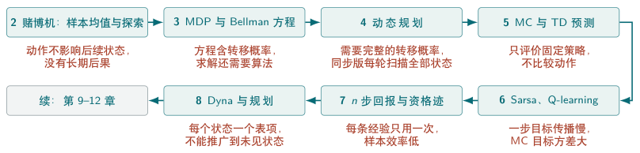
第 2–8 章的困难链。从左上的第 2 章读起，到第 5 章折回下一行，读到第 8 章；每个方框是一章的方法，框下红字是它留下的困难，由下一章处理。
选读：第二部分地图（上）
表格换成函数逼近后，困难转到稳定性与数据。第 9 章起，价值或策略由参数化函数表示，相似的状态共享参数；估值与改进仍然交替，新的困难来自逼近、自举与旧数据的组合。第 9 章用参数共享推广到大状态空间，代价是离策略、自举与函数逼近三者同时出现时，估计可能发散。第 10 章用经验回放与目标网络稳定深度 Q 学习；第 11 章直接优化参数化策略，处理连续动作；第 12 章处理固定数据、学到的模型与分布式采样。第 12 章的方法大多在仿真器里取得结果，那里动作不花钱、奖励由程序给出、环境随时可以重置；离开仿真，这三项都有了代价，这是第 13、14 章的出发点。逐章列表见第 0 章 0.4 节第二部分 。
第 9–12 章的困难链，读法同上；最后一格指向第 13–26 章。
选读：第二部分地图（下）
语言与物理环境改变的是一步价值式的输入。第 3–12 章大多在估计 q ( s , a ) = E [ R t + 1 + γ v ( S t + 1 ) ∣ S t = s , A t = a ] q(s,a)=\mathbb E[R_{t+1}+\gamma v(S_{t+1})\mid S_t=s,A_t=a] q ( s , a ) = E [ R t + 1 + γ v ( S t + 1 ) ∣ S t = s , A t = a ] q q q
输入
第 3–12 章
第 13 章 语言模型
第 14 章 具身智能体
转移
未知，靠采样或学习
拼接词元，已知；同一提示可反复采样
未知，时间只向前，不能重来
状态
给定，或由特征表示
上下文即状态；多轮时须从历史构造
位姿与接触不在画面里
奖励
环境给出，最大化它就是任务
代理：验证器、奖励模型、人的比较
测量所得，会误判，每次花工时
动作
少量离散动作或低维连续量
词表上的序列，一个回答上千词元
连续命令，执行时长不等，有约束
选读：第三部分地图
持续强化学习的每一章撤去前面各章的一项默认条件。第 15–26 章研究容量有限的学习器 L L L J T ( L ; ν ) J_T(L;\nu) J T ( L ; ν ) L L L ν \nu ν T T T 第 0 章 0.4 节第三部分 ；七项默认条件的完整表见第 15 章开头。第三部分记智能体状态为 Z t Z_t Z t
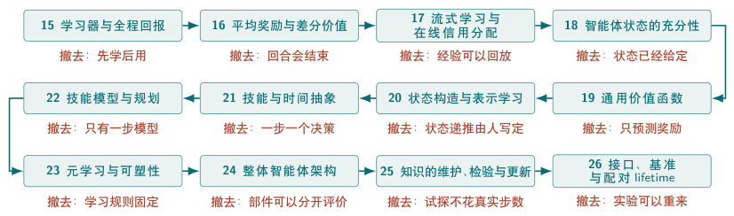
第 15–26 章的撤条件链。沿蛇形读三行；框下红字是这一章撤去的默认条件（①–⑦），最后三章写的是撤完以后剩下的问题。
前两部分的困难链里，有三个困难在多章反复出现，它们比单个方法更值得记住。第一个是用估计值代替未知的期望 ，即自举。第 4 章的动态规划用模型求和，第 5 章的 TD 用一个样本，第 6 章的 Q-learning 在样本上取最大，第 10 章的 DQN 用回放批量。它们都把后继状态的价值换成当前估计，区别在于期望怎样得到。第二个是行为分布与目标分布不同 ，本章第 1.4 节的行为策略 b b b π \pi π 一个参数改变许多预测 ：一次更新会同时改变未访问状态的估计。第 9 章的函数逼近、第 10 章的 DQN 与第 11 章的策略梯度都面对它。
本章开头提出的问题是：只凭自己行动换来的奖励，学会选择动作。那时符号都还没有定义；现在每一项都能在前面找到出处，可以把它写成“给定、求、条件”三栏。
给定交互接口与回报准则，求期望回报尽可能大的策略。
给定 接口：在时刻 t t t A t ∈ A A_t\in\mathcal A A t ∈ A O t + 1 O_{t+1} O t + 1 R t + 1 ∈ R R_{t+1}\in\mathbb R R t + 1 ∈ R P ( O t + 1 , R t + 1 ∣ H t , A t ) P(O_{t+1},R_{t+1}\mid H_t,A_t) P ( O t + 1 , R t + 1 ∣ H t , A t ) H t H_t H t t t t
求 控制：求策略 π ( a ∣ H t ) \pi(a\mid H_t) π ( a ∣ H t ) J ( π ) = E π [ G 0 ] J(\pi)=\mathbb E_\pi[G_0] J ( π ) = E π [ G 0 ] G 0 = ∑ k = 0 T − 1 γ k R k + 1 G_0=\sum_{k=0}^{T-1}\gamma^kR_{k+1} G 0 = ∑ k = 0 T − 1 γ k R k + 1 π \pi π J ( π ) J(\pi) J ( π ) v π v_\pi v π
条件 奖励假设：目标可写成最大化标量奖励累积和的期望。J ( π ) J(\pi) J ( π ) 0 ≤ γ < 1 0\le\gamma<1 0 ≤ γ < 1 T = ∞ T=\infty T = ∞ γ = 1 \gamma=1 γ = 1 E [ T ] < ∞ \mathbb E[T]<\infty E [ T ] < ∞
各项出处：接口与历史 H t H_t H t G 0 G_0 G 0 J ( π ) J(\pi) J ( π ) v π v_\pi v π
有限性条件要写严。若 0 ≤ γ < 1 0\le\gamma<1 0 ≤ γ < 1 R max R_{\max} R m a x R max / ( 1 − γ ) R_{\max}/(1-\gamma) R m a x / ( 1 − γ ) T = ∞ T=\infty T = ∞ γ = 1 \gamma=1 γ = 1 E [ T ] \mathbb E[T] E [ T ] R max E [ T ] R_{\max}\,\mathbb E[T] R m a x E [ T ]
与监督学习相比有两处差别：反馈只评价所选动作，不给出正确动作，也不说明另一个动作会得到多少；所选动作还决定以后得到哪些数据。任务可以提供示范、模型或已有知识，它们改变可用信息，目标仍由回报准则规定。主算例是冰面两步任务：左路 L L L R R R γ = . 9 \gamma=.9 γ = .9 Sutton 与 Barto，§§1.1、3.1–3.3
自测
自测共十一题，分四组：前三题检查回报与价值，第 4–6 题检查反馈与边界，第 7、8 题检查信息与数据，第 9–11 题分别检查第 1.4、1.5、1.6 节。先自己做，再对照答要点。
第 1–4、8、9 题用冰面两步任务：左路 L L L R R R
γ = . 9 \gamma=.9 γ = .9 γ \gamma γ 答要点： G 0 ( L ) = 1 G_0(L)=1 G 0 ( L ) = 1 G 0 ( R ) = . 9 × 4 = 3.6 G_0(R)=.9\times4=3.6 G 0 ( R ) = .9 × 4 = 3.6 4 γ > 1 4\gamma>1 4 γ > 1 γ > 1 / 4 \gamma>1/4 γ > 1/4 由回报的定义推出 G t = R t + 1 + γ G t + 1 G_t=R_{t+1}+\gamma G_{t+1} G t = R t + 1 + γ G t + 1 答要点： 把求和的 k = 0 k=0 k = 0 R t + 1 R_{t+1} R t + 1 γ \gamma γ G t + 1 G_{t+1} G t + 1
起点以 p = . 5 p=.5 p = .5 γ = . 9 \gamma=.9 γ = .9 v π ( s ) v_\pi(s) v π ( s ) 答要点： v π ( s ) = . 5 ( 1 ) + . 5 ( 3.6 ) = 2.3 v_\pi(s)=.5(1)+.5(3.6)=2.3 v π ( s ) = .5 ( 1 ) + .5 ( 3.6 ) = 2.3 p p p p = 1 p=1 p = 1 3.6 3.6 3.6
第一趟走 L L L R R R 答要点： 不能。这条反馈只评价左路，不说明右路会得到多少；监督学习的标签直接给出正确答案。要知道右路的回报，必须去试右路，这是需要探索的原因，第 2 章展开。
机械臂实验甲中，学习器给出参考位置。运动控制器属于智能体还是环境？答要点： 环境。边界取在学习器直接选择的那条指令上，与物理上的身体界限无关；同一个运动控制器在别的实验设计里也可以划进智能体。
企鹅学会拨动计分器，每步记 10 分，捉到的鱼却没有增加。问题出在哪一环？答要点： 计算奖励的装置放错了一侧，落在智能体能改动的地方。学习算法没有出错，它准确地最大化了写下来的那个数；出错的是设计者把目标写成奖励、并把奖励装置放进智能体够得着的范围这一环（第 1.2 节“奖励装置在环境里”，第 1.3 节“奖励设计”）。
提示任务中，策略只看当前画面。为什么任何 p p p 1 / 2 1/2 1/2 答要点： 两种提示下当前画面相同，成功率 1 2 p + 1 2 ( 1 − p ) = 1 2 \tfrac12p+\tfrac12(1-p)=\tfrac12 2 1 p + 2 1 ( 1 − p ) = 2 1 p p p
一批数据来自一只一半时间走右路的企鹅。要评价八成时间走右路的走法，直接平均这批数据中的回报，得到什么？答要点： 行为策略 b ( R ∣ s ) = . 5 b(R\mid s)=.5 b ( R ∣ s ) = .5 π ( R ∣ s ) = . 8 \pi(R\mid s)=.8 π ( R ∣ s ) = .8 b b b 2.3 2.3 2.3 π \pi π . 2 ( 1 ) + . 8 ( 3.6 ) = 3.08 .2(1)+.8(3.6)=3.08 .2 ( 1 ) + .8 ( 3.6 ) = 3.08
“用 Q-learning 求冰面任务的最优策略”一句里，哪部分是问题，哪部分是方法？若转移概率与奖励都已知，还可以用哪类方法？答要点： 问题是冰面任务，即在这个交互接口下最大化期望回报；Q-learning 是求解它的一种方法，换一种算法不改变问题。若转移概率与奖励都已知，可以不与环境交互，直接用动态规划算出价值与最优策略，这是规划，第 4 章展开。
AlphaZero 的搜索与学习各用额外的计算做什么？两者怎样互相提供输入与目标？答要点： 搜索把计算用在眼前，在每一步决策前推演合法应答；学习把计算用在以后，从自对弈的结果中更新网络。网络给出的落子概率与局面价值决定搜索展开哪些分支；搜索之后的落子分布与终局胜负，又作为下一轮训练的目标。
R1-Zero 在五级台阶上属于第几级？它为什么不属于第五级？答要点： 第四级，大规模。它从预训练模型出发，数据来自验证器对许多回答的判定。它在部署之前学完，部署以后权重不再改变，所以不属于第五级；第五级要求在使用中一直学，这是本课第三部分的问题。
补充阅读：研究路线课件
这一部分是本章正文之外的补充阅读，课上不讲。第 1.6 节的主线说明了走到部署中持续学习的理由。下面五小节给出这条研究路线的出处。它们依次讲 Alberta Plan 与它的十二步、OaK 的回路、四条主要的不同意见，以及公开以持续经验学习为方向的几家机构。
本课与 Alberta Plan课件
Alberta Plan 把通向持续学习智能体的路线排成 12 步，本课各章在这条路线上都有位置。它是 Sutton、Bowling 与 Pilarski 在 2022 年写的一份五到十年的研究计划。它要研究的问题是：一个长期存活、算力有限的智能体，在远比自己复杂的世界里，只凭普通经验在线最大化奖励；没有专门的训练期，每一步都在学习和规划。它有四条设计原则：只用普通经验，不用训练集，也不靠人工帮助；时间均匀（第 1.1 节），学习、规划和元学习每一步都在运行；方法要能随计算增长；世界里有别的智能体。下表摘出其中四步，完整的十二步见下一小节。
步
内容（摘四步）
本课
1 表示 I
给定特征的持续监督学习；每个权重各自的步长
第 9、17、23 章
3 预测 I
持续学习通用价值函数
第 19 章
7 规划 I
平均奖励下的规划
第 22 章
11 原型 III
对特征、子任务、技能、模型做效用评估与替换
第 21–25 章
后面的 OaK 也要用到三个词。子问题 是以使某个特征达到高值为目标的辅助问题，例如让手里拿着杯子这个特征变成真。技能 是解一个子问题的策略，加上何时停止的终止条件，例如伸手拿杯子、拿到就停。元学习 是学习怎样调整学习过程本身，最简单的例子是每个权重的步长不由设计者写定，而在运行中学出来。这三个词在第 21、23 章正式定义。
Alberta Plan 的 12 步分三段。从左往右：第 1–6 步重做无模型方法，第 7–9 步加入规划，第 10–12 步做原型。路线条下一句写与本课的对应：本课第一、二部分讲第 1–6 步方法的回合式版本，十二步的持续版本都在第三部分。
这份计划代表一个研究团队的路线，不代表领域共识。许多研究者把大规模预训练加微调看作更现实的路线。以 Alberta Plan 为起点的 Openmind 研究所也说明，实际的研究路径会偏离原计划。Sutton、Bowling 与 Pilarski，The Alberta Plan for AI Research，2022 · Openmind 研究所
选读：Alberta Plan 十二步
十二步的次序是：先重做无模型方法，再加入规划，最后做原型。第 1 到 6 步对无模型方法逐项重做：先在给定特征下做持续的监督学习，每个权重有自己的步长；再学会生成和替换特征；然后是持续的通用价值函数预测与行动者–评论者控制；最后换成平均奖励、没有回合的持续控制。第 7 到 9 步加入规划；第 10 到 12 步是原型。
步
内容
本课
1 表示 I
给定特征的持续监督学习；每个权重各自的步长
第 9、17、23 章
2 表示 II
特征的生成、评估与替换
第 20 章
3 预测 I
持续学习通用价值函数
第 19 章
4 控制 I
持续的行动者–评论者
第 11、17 章
5 预测 II
平均奖励下的通用价值函数
第 16、19 章
6 控制 II
没有回合的持续控制
第 16 章
7 规划 I
平均奖励下的规划
第 22 章
8 原型 I
一步模型加持续函数逼近
第 8、12 章
9 规划 II
搜索控制与探索
第 8、22 章
10 原型 II
子任务 → 技能 → 模型 → 规划
第 21、22 章
11 原型 III
对特征、子任务、技能、模型做效用评估与替换
第 21–25 章
12 原型 IA
用 AI 增强人
第 14 章提及
第 1–6 步重做无模型方法：本课第一部分讲这些方法的回合式、给定特征的版本，第三部分讲它们的持续版本。第 10 步称为 STOMP 递进，从子任务到技能、技能的模型，再到用模型规划；第 11 步是 Oak 原型。“本课”一列是本课的对应；第 12 步只在第 14 章提一句，这也是本课的取舍。
OaK 的回路课件
OaK 让智能体自己提出子问题，学会技能及其模型并用来规划；没用的部件被淘汰。
OaK 是 Sutton 在 2025 年提出的架构，对应 Alberta Plan 的第 10、11 步。他先在强化学习会议（RLC）的主旨报告中讲，后在 NeurIPS 的特邀报告中讲；其中的 option 本课译作技能。报告摘要列出它的三个特点：所有部件都持续学习；每个权重的步长用在线交叉验证做元学习；采用 FC-STOMP 式的抽象，即从特征出发提出子问题，学会解子问题的技能，学会技能的模型，再用模型规划。
书面的报告摘要只列主环五步：构造特征、提出子任务、学技能、学模型、规划。本节的回路图在此之外加了三个节点：给特征排序、为奖励学策略与价值、效用评估与更替。这三个节点见于 RLC 2025 主旨报告：Sutton 在报告中把 OaK 讲成运行时并行进行的八个步骤，但没有给出书面算法。回路的中心是主任务：为奖励学策略与价值。外圈从左上开始，依次是：构造新特征；给特征排序；为排在前面的特征各提一个子问题；学会解子问题的技能；学会技能和动作的模型；用模型规划；再改进中心的策略与价值。智能体同时维护各部件的效用，淘汰没用的，换上新的。实际运行时，这些环节同时运行。回路里的每一环，本课都有对应的章：技能在第 21 章，技能模型与规划在第 22 章，步长元学习在第 23 章，效用评估与替换在第 24–25 章。
OaK 回路。中间金色是为奖励学策略与价值。青色实线是已有实验的一段：子问题、技能、技能的模型、规划，再回到中间，每个箭头上的动词说明这一步做什么；灰色虚线是还没有一般方案的环节：构造特征、给特征排序、提出子问题，以及效用评估、淘汰与更替。实线虚线之分是本课的判断。
各环节的进展不一。从子问题到技能、模型和规划的一段，Sutton 等人在 Reward-Respecting Subtasks 一文中做过实验；怎样构造特征、怎样排序、怎样做效用评估，目前还没有一般的方案。这一划分是本课的判断，演讲里没有这样分。Sutton 在 2025 年的一次讲座中说明，在 OaK 中特征、子问题、技能三者一一对应。子问题应当奖励相容 ：在达到某个特征的同时，不能牺牲太多主任务的奖励。就本课所见的公开材料，OaK 还是一个架构设想，尚无把整个回路放在一起运行的实验。Sutton，RLC 2025 主旨报告、NeurIPS 2025 特邀报告 · Sutton，Planning and Action Selection in Options-based Agents，2025 · Sutton 等，Reward-Respecting Subtasks
四个不同意见课件
本章正文与前面几小节介绍的是一条研究路线：从大世界假设、经验时代到 Alberta Plan 与 OaK。这条路线是一个工作假设，反对它的意见各有证据，本课在相应各章讨论。
人类数据一直是起点。 DeepSeek-R1 从一个预训练好的语言模型出发，再用强化学习提高推理能力；已发表的实验没有比较从随机初始化开始会怎样。常见的推断是：随机初始化的模型很少写出正确解答，奖励几乎总是零，学习难以开始；这一推断尚无对照实验。经验时代一文把 R1 和 AlphaProof 作为经验学习的早期迹象，这两者都建立在人类数据之上。第 13 章讨论预训练在强化学习中的作用。
一个标量不够。 第 1.3 节介绍了 Vamplew 等人的反例：有先后的偏好、多种驱力、多个当事人，都难以写成一个数。若目标本身难以写成一个数，以最大化标量奖励为中心的路线就要修改。第 15、16 章讨论持续任务中目标的写法。
物理世界的经验又慢又贵。 真实时间里行动，一秒钟只能得到一秒钟的经验；机器人摔坏了要修，环境弄乱了要恢复。所以仿真和离线数据在机器人学习中仍不可少，第 1.5 节的 Swift 就在仿真里练习。经验时代一文把这一点反过来看作安全上的好处：物理世界的行动受真实时间约束，天然构成一道刹车。第 14 章讨论具身智能体的样本代价。
整体还没有被检验。 Sutton 在 RLC 2025 的主旨报告中给 OaK 的八个步骤分了级：规划一步他认为已经弄清；为奖励学策略与价值、学子问题的解和模型几步，要等持续深度学习与元学习做好才算完成；从已有特征生成新特征一步有许多想法，但还没有具体方案。他明确说，OaK 需要可靠的持续深度学习，而这一点现在还做不到。报告中没有展示整个回路一起运行的实验结果。第 21–25 章讨论各环节的现状。
本课把持续学习当作有待研究的问题，在相关各章同时给出支持和反对这条路线的证据。Silver 与 Sutton，Welcome to the Era of Experience，2025 · Vamplew 等，Scalar reward is not enough，2022
选读：谁在做这条路线
几家机构公开以持续的经验学习为研究方向。下表只列它们网站与公开报道写明的内容，不作评价。
机构
定位
公开写明的方向
Openmind 研究所
在加拿大注册的非营利研究机构；研究公开，不持有知识产权
以 Alberta Plan 为起点，研究心智怎样从与持续数据流的交互中形成
Oak Lab
Sutton 与 Khurram Javed 于 2026 年创立，同年 7 月对外公布
让智能体在大世界中实现目标；构建 OaK 架构；批量为 1 的在线学习
Ineffable Intelligence
David Silver 创立的公司，总部伦敦；2025 年 11 月在英国注册
不用预训练与人类数据，靠智能体自己的经验扩展强化学习
Openmind 研究所的路线明确以 Alberta Plan 为起点，并说明实际路径会偏离原计划；它还组织工作坊和暑期、冬季学校。Oak Lab 网站写明的使命是：发现并实现让智能体在大世界中达到目标的算法。它正在构建 OaK 架构。技术取向包括批量为一、不用回放的学习，事件驱动的网络，以及只把信用分给泛化良好的参数。它的一篇 2026 年 7 月的博文用一个带噪的数据流说明：让每个权重各自学习步长，方法就只学可预测的部分。这与第 23 章的步长元学习直接相关。Ineffable Intelligence 是 David Silver 离开 Google DeepMind 后创立的公司。据 Fortune 2026 年 1 月的报道，公司于 2025 年 11 月在英国公司注册处登记。据投资方 Sequoia 的文章与媒体报道，它要造一个从自己的经验中学习的超级学习者。它不用预训练和人类数据，直接扩展强化学习。这与第 1.6 节经验时代一文是同一个主张。融资与团队等细节以公司公告为准，本课不列。
前两家的方向与本课第三部分直接相关：步长元学习、特征发现、批量为 1 的在线学习；第三家主张从经验扩展强化学习。持续学习也是许多大实验室的研究题目，只是路线不同，例如在大模型上做在线微调或检索记忆；上表只列公开以经验学习为出发点的几家机构，不代表这个方向的全部。openmindresearch.org · oaklab.ai · The Decoder，2026-07-13 · Fortune，2026-01-30 · Sequoia
补充阅读：目标与数据条件
这一部分是补充阅读，课上不讲。它把第 1.3 节的回报与第 1.4 节的问题设定写成式子，分四小节：三种目标；评价策略与评价学习算法的区别；行为策略、目标策略与数据条件；问题空间的几个侧面。
回合、折扣与平均奖励目标
设起始状态服从初始分布 d 0 d_0 d 0 H H H C H ( π ) = E d 0 , π [ ∑ k = 1 H R k ] C_H(\pi)=\mathbb E_{d_0,\pi}[\sum_{k=1}^H R_k] C H ( π ) = E d 0 , π [ ∑ k = 1 H R k ] H H H T T T
对可无限运行的任务，持续收到的奖励总和可能发散。两种常用比较规则是
J γ , d 0 ( π ) = E d 0 , π [ ∑ t = 0 ∞ γ t R t + 1 ] ,
J_{\gamma,d_0}(\pi)=\mathbb E_{d_0,\pi}\!\left[\sum_{t=0}^{\infty}\gamma^tR_{t+1}\right],
J γ , d 0 ( π ) = E d 0 , π [ t = 0 ∑ ∞ γ t R t + 1 ] ,
以及长期平均奖励
r d 0 ( π ) = lim N → ∞ 1 N E d 0 , π [ ∑ t = 0 N − 1 R t + 1 ] .
r_{d_0}(\pi)=\lim_{N\to\infty}\frac1N\mathbb E_{d_0,\pi}\!\left[\sum_{t=0}^{N-1}R_{t+1}\right].
r d 0 ( π ) = N → ∞ lim N 1 E d 0 , π [ t = 0 ∑ N − 1 R t + 1 ] .
下标 d 0 d_0 d 0 r ( π ) r(\pi) r ( π ) 0 ≤ γ < 1 0\le\gamma<1 0 ≤ γ < 1 π A \pi_A π A 1 , 1 , 1 , … 1,1,1,\ldots 1 , 1 , 1 , … π B \pi_B π B 0 , 3 , 0 , 3 , … 0,3,0,3,\ldots 0 , 3 , 0 , 3 , …
J γ ( π A ) = 1 1 − γ , J γ ( π B ) = 3 γ 1 − γ 2 .
J_\gamma(\pi_A)=\frac1{1-\gamma},\qquad
J_\gamma(\pi_B)=\frac{3\gamma}{1-\gamma^2}.
J γ ( π A ) = 1 − γ 1 , J γ ( π B ) = 1 − γ 2 3 γ .
从图示的共同起点出发，后者的折扣回报更高当且仅当 γ > 1 / 2 \gamma>1/2 γ > 1/2 γ = 1 \gamma=1 γ = 1
折扣和怎样与奖励率相联系？ 乘上 1 − γ 1-\gamma 1 − γ k k k ( 1 − γ ) γ k − 1 (1-\gamma)\gamma^{k-1} ( 1 − γ ) γ k − 1 γ < 1 \gamma<1 γ < 1
更具体地说，固定共同的起始分布与策略，设奖励有界且 C H ( π ) / H → r d 0 ( π ) C_H(\pi)/H\to r_{d_0}(\pi) C H ( π ) / H → r d 0 ( π )
( 1 − γ ) J γ , d 0 ( π ) = ∑ n = 1 ∞ n ( 1 − γ ) 2 γ n − 1 ⏟ w n C n ( π ) n . (1-\gamma)J_{\gamma,d_0}(\pi)=\sum_{n=1}^{\infty}\underbrace{n(1-\gamma)^2\gamma^{n-1}}_{w_n}\,\frac{C_n(\pi)}{n}. ( 1 − γ ) J γ , d 0 ( π ) = n = 1 ∑ ∞ w n n ( 1 − γ ) 2 γ n − 1 n C n ( π ) .
右侧是各长度前缀平均奖励的加权平均。∑ n w n = 1 \sum_n w_n=1 ∑ n w n = 1 γ ↑ 1 \gamma\uparrow1 γ ↑ 1 r d 0 ( π ) r_{d_0}(\pi) r d 0 ( π ) 0 , 3 , 0 , 3 , … 0,3,0,3,\ldots 0 , 3 , 0 , 3 , … 3 γ / ( 1 + γ ) 3\gamma/(1+\gamma) 3 γ / ( 1 + γ ) 1.5 1.5 1.5
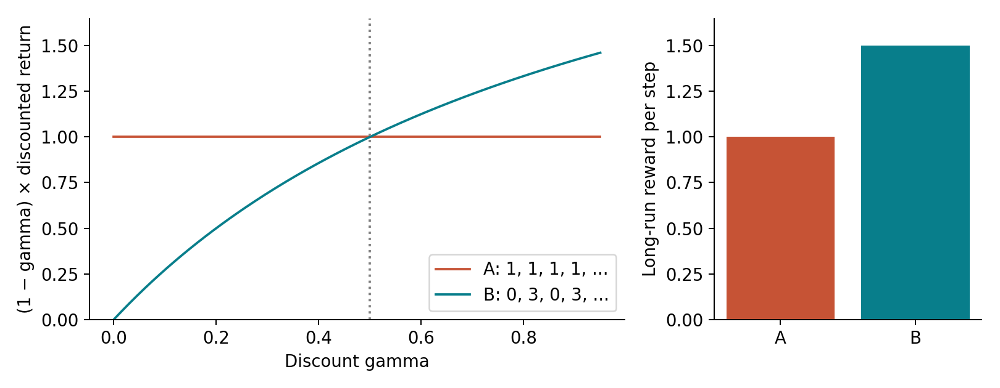
固定折扣率下，归一化不改变策略排序；改变折扣率则可能改变排序。
策略评价与学习算法评价
停止更新后重复使用同一个策略，可以估计它的期望回报。评价学习过程，还要计入尚未学会时获得的奖励、使用的经验和计算。
沿用两步任务，终止后立即重启，重启不占环境交互步。两条指定的行动序列分别在各回合首先选择 R , R , R R,R,R R , R , R L , L , L , L , R L,L,L,L,R L , L , L , L , R 0 , 4 , 0 , 4 , 0 , 4 0,4,0,4,0,4 0 , 4 , 0 , 4 , 0 , 4 1 , 1 , 1 , 1 , 0 , 4 1,1,1,1,0,4 1 , 1 , 1 , 1 , 0 , 4
相同最终动作选择对应不同的学习期间奖励。左图是每步奖励，右图是截至该步的累积奖励。
用各回合的完整回报更新所选动作的样本均值，两条序列的最终估计分别为 ( Q ( L ) , Q ( R ) ) = ( 0 , 3.6 ) (Q(L),Q(R))=(0,3.6) ( Q ( L ) , Q ( R )) = ( 0 , 3.6 ) ( 1 , 3.6 ) (1,3.6) ( 1 , 3.6 ) s s s R R R
行为策略、目标策略与数据条件
行为策略与目标策略的区分，以及按概率之比加权的数值例，见第 1.4 节“谁在走，评价谁”。数据条件还有另一个维度：经验能否继续获得。在线交互可以继续执行动作并获得新反馈；离线 RL 只使用给定数据集。经验回放则是对保存数据的再次抽样，在线算法同样可以使用回放。DQN 在线获得经验，又用旧策略产生的数据做离策略价值学习。因此，离策略和离线不能当作同义词。
问题空间的几个侧面
下面五小节原属第 1.4 节，从同一个交互问题的几个侧面作补充。这几个侧面是：动作影响哪些后果，智能体能获得哪些信息，问题要求与资源预算是否相称，以及怎样评价长期学习。MDP/POMDP 描述状态转移与信息结构，大世界比较问题需求与智能体容量，CRL 研究长期学习过程，这些条件可以同时出现在一个任务中。
动作后果与可用信息
动作对后续状态的影响、观测信息与大世界中的持续学习。下方金色带表示可以叠加的资源和长期学习条件。
多臂赌博机暂时去掉动作对未来环境状态的影响，保留未知奖励、选择性反馈和探索。上下文赌博机允许动作选择依赖当前上下文，但这里仍假设动作不改变未来的上下文。有限 MDP 恢复序列决策，同时给定可观测的马尔可夫状态和有限动作。POMDP 中，当前观测可能遗漏影响未来的状态信息，学习者需要利用历史构造智能体状态，如第 1.2 节的提示记忆。智能体状态是否保留了足够信息，还取决于构造方式。
因此，问题图的横轴区分本轮奖励与后续状态后果，纵轴区分给定充分状态与仅有部分观测。可观测状态并不提供未知的转移概率；MDP 中仍然可能需要探索和估计。隐藏奖励模式的选择问题则说明，即使动作不改变未来的上下文，过去反馈也可能帮助推断当前模式。
记忆与计算预算
给定任务下，具体实现的每步计算与持久存储需求，以及可用预算。点表示实现消耗，位置不表示性能。
大世界（第 1.2 节）描述的是问题与智能体之间的相对关系。同一个 MDP，对一个智能体可能允许逐状态保存价值，对另一个智能体却可能远超其存储和计算预算。给定任务与评价准则，记具体实现 L \mathcal L L m ( L ) m(\mathcal L) m ( L ) c ( L ) c(\mathcal L) c ( L ) M , C M,C M , C
m ( L ) ≤ M , c ( L ) ≤ C , c ( L ) = c 动作选择 + c 学习 + c 规划 .
m(\mathcal L)\le M,\qquad c(\mathcal L)\le C,\qquad
c(\mathcal L)=c_{\text{动作选择}}+c_{\text{学习}}+c_{\text{规划}}.
m ( L ) ≤ M , c ( L ) ≤ C , c ( L ) = c 动作选择 + c 学习 + c 规划 .
图中的点代表具体实现。表格分别存储各状态的估计；共享参数以较紧凑的函数连接多个状态，同时改变能表示的函数和更新的影响范围。经验回放增加存储与重复计算，模型搜索增加决策计算，学得价值可以替代部分更远的搜索。满足资源预算之后，还需要检验这些近似能否支持所要求的行为。表格、线性函数与神经网络因而不构成一条统一的容量排名。
预测、控制与模型权限
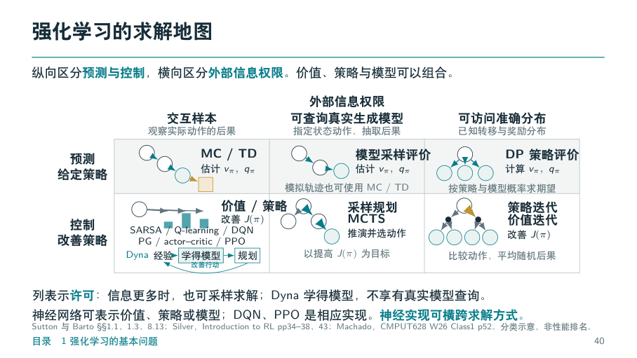
预测与控制、交互样本与模型权限的关系。Dyna 从实际经验学习模型，和直接查询真实生成模型分列。
明确问题后，求解地图再按预测或控制、以及外部信息权限组织方法。只观察实际交互样本时，可以从经验学习价值、策略或模型；有真实生成模型查询权限时，可以指定状态动作、采样后果并规划；能访问准确分布时，可以对后果求期望。信息更多时仍可使用采样方法。Dyna 从经验学得模型再规划，模型会带有估计误差，与直接查询真实生成模型的条件不同。价值、策略和模型也可以组合，例如行动者–评论者同时维护策略与价值。
交互边界与长期学习
环境经验、学习器状态与评价窗口。回合重置可以保留已学知识，持续交互不预设任务边界与终止时刻。
MDP 与 POMDP 都可以有回合式或持续式交互。一个回合结束后，环境重新开始，同一个学习器仍可保留参数和已有知识；持续交互则沿同一 lifetime 中的经验继续前进。环境的分段方式与学习器是否清空，是两项不同的规定。
两种交互都允许比较固定策略，也允许比较学习算法。对前者，给定相同的起点分布并执行各自的固定策略。对后者，给定相同的初始条件和交互预算，从第一步累计实际获得的奖励。探索或适应期间少获得的奖励会改变这项得分。计算成本可以作为单独的资源约束；只有将其计入奖励或评价准则时，得分才直接反映它。本课的 CRL 重点是有限资源下、没有人为任务切换重置的长期连续经验中的学习过程 。环境规律平稳时，未覆盖的情形和有限表示仍可能使继续学习有价值；非平稳则是持续学习的一种动因，是否需要持续更新仍取决于变化结构、允许的智能体和目标。折扣回报、有限期限回报和适当条件下的平均奖励都可以用于规定目标，本专题第一小节比较了这些选择。
经典、深度与持续强化学习
函数逼近引入参数共享，深度网络进一步学习特征，使自举目标、数据分布和优化互相影响。持续 RL 研究这些过程在长期使用中怎样继续有效，状态、知识和技能也可能需要形成与更新。因此，经典方法、深度表示和持续学习可以组合；神经网络可用于价值、策略或模型，并横跨不同求解方式。第 15 章把这些构件组合进一个长期运行、资源有限的智能体，研究它怎样从自身经验形成并修订状态、知识与技能。
语言和具身任务将这些条件具体化。语言动作、连续电机指令、人工评价、自动检验、仿真和真实重置，各自改变可获得的数据与反馈成本。大模型后训练、机器人控制和持续学习可以共享算法，也需要分别说明目标和实验条件。
练习
下面六题都基于本章的例子，计算题附有核对数值。
练习 1.1 两步任务中，L L L R R R γ \gamma γ R R R L L L p p p R R R J ( p ) J(p) J ( p ) γ = . 9 \gamma=.9 γ = .9 p p p 核对： γ > 1 / 4 \gamma>1/4 γ > 1/4 J ( p ) = 1 + ( 4 γ − 1 ) p J(p)=1+(4\gamma-1)p J ( p ) = 1 + ( 4 γ − 1 ) p γ = . 9 \gamma=.9 γ = .9 p = 1 p=1 p = 1 J = 3.6 J=3.6 J = 3.6
练习 1.2 一个回合的奖励序列为 R 1 = 0 , R 2 = 0 , R 3 = 1 R_1=0,R_2=0,R_3=1 R 1 = 0 , R 2 = 0 , R 3 = 1 γ = . 9 \gamma=.9 γ = .9 G 0 , G 1 , G 2 G_0,G_1,G_2 G 0 , G 1 , G 2 G t = R t + 1 + γ G t + 1 G_t=R_{t+1}+\gamma G_{t+1} G t = R t + 1 + γ G t + 1 核对： G 2 = 1 G_2=1 G 2 = 1 G 1 = . 9 G_1=.9 G 1 = .9 G 0 = . 81 G_0=.81 G 0 = .81
练习 1.3 提示任务中，智能体状态保存了提示颜色，但每次以概率 . 2 .2 .2 核对： 成功率 . 8 .8 .8 . 8 .8 .8 . 8 .8 .8
练习 1.4 持续任务中 π A \pi_A π A π B \pi_B π B 0 , 3 0,3 0 , 3 γ = . 4 \gamma=.4 γ = .4 γ = . 6 \gamma=.6 γ = .6 核对： γ = . 4 \gamma=.4 γ = .4 1.6667 1.6667 1.6667 1.4286 1.4286 1.4286 π A \pi_A π A γ = . 6 \gamma=.6 γ = .6 2.5 2.5 2.5 2.8125 2.8125 2.8125 π B \pi_B π B
练习 1.5 两步任务取 γ = . 9 \gamma=.9 γ = .9 b ( R ∣ s ) = . 5 b(R\mid s)=.5 b ( R ∣ s ) = .5 π ( R ∣ s ) = . 8 \pi(R\mid s)=.8 π ( R ∣ s ) = .8 π ( A 0 ∣ s ) / b ( A 0 ∣ s ) \pi(A_0\mid s)/b(A_0\mid s) π ( A 0 ∣ s ) / b ( A 0 ∣ s ) b ( R ∣ s ) = 0 b(R\mid s)=0 b ( R ∣ s ) = 0 核对： 3.08 3.08 3.08 . 5 ( . 4 ) ( 1 ) + . 5 ( 1.6 ) ( 3.6 ) = 3.08 .5(.4)(1)+.5(1.6)(3.6)=3.08 .5 ( .4 ) ( 1 ) + .5 ( 1.6 ) ( 3.6 ) = 3.08
练习 1.6 安全路得 3 条鱼；冒险路得 n n n 1 % 1\% 1% − c -c − c c = 1000 c=1000 c = 1000 n n n c c c 核对： n > 13 n>13 n > 13 c c c n > 3 + . 01 c n>3+.01c n > 3 + .01 c
复现记录
本章的数值都可以复现：
提示任务、目标比较与奖励塑形计算代码 。首章用提示任务辨认信息限制；奖励塑形证明在第 3 章。程序中的真值只用于分析和评价，不作为提示任务的训练标签。
两步任务中的价值估计与奖励序列 ：生成本章两组图及其数值结果。
在 GitHub 上修改本章 · 返回目录